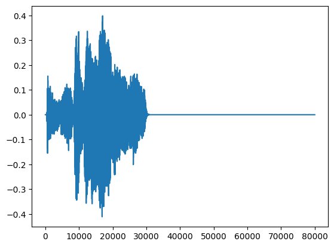
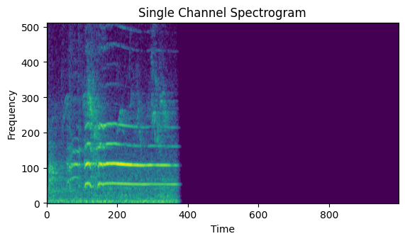
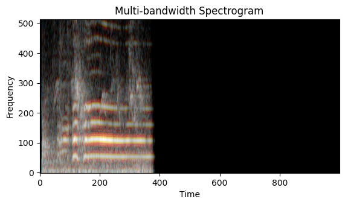
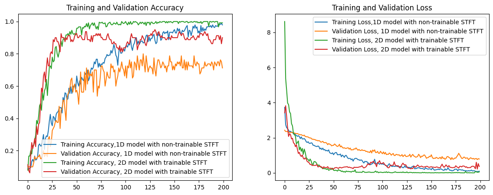

Audio Classification with the STFTSpectrogram layer
Author: Mostafa M. Amin
Date created: 2024/10/04
Last modified: 2025/12/08
Description: Introducing the STFTSpectrogram layer to extract spectrograms for audio classification.

Introduction
Preprocessing audio as spectrograms is an essential step in the vast majority
of audio-based applications. Spectrograms represent the frequency content of a
signal over time, are widely used for this purpose. In this tutorial, we'll
demonstrate how to use the STFTSpectrogram layer in Keras to convert raw
audio waveforms into spectrograms within the model. We'll then feed
these spectrograms into an LSTM network followed by Dense layers to perform
audio classification on the Speech Commands dataset.
We will:
- Load the ESC-10 dataset.
- Preprocess the raw audio waveforms and generate spectrograms using
STFTSpectrogram. - Build two models, one using spectrograms as 1D signals and the other is using as images (2D signals) with a pretrained image model.
- Train and evaluate the models.
Setup
Importing the necessary libraries
import os
os.environ["KERAS_BACKEND"] = "jax"
import keras
import matplotlib.pyplot as plt
import numpy as np
import pandas as pd
import scipy.io.wavfile
from keras import layers
from scipy.signal import resample
keras.utils.set_random_seed(41)
Define some variables
BASE_DATA_DIR = "./datasets/esc-50_extracted/ESC-50-master/"
BATCH_SIZE = 16
NUM_CLASSES = 10
EPOCHS = 200
SAMPLE_RATE = 16000
Download and Preprocess the ESC-10 Dataset
We'll use the Dataset for Environmental Sound Classification dataset (ESC-10). This dataset consists of five-second .wav files of environmental sounds.
Download and Extract the dataset
keras.utils.get_file(
"esc-50.zip",
"https://github.com/karoldvl/ESC-50/archive/master.zip",
cache_dir="./",
cache_subdir="datasets",
extract=True,
)
'./datasets/esc-50_extracted'
Read the CSV file
pd_data = pd.read_csv(os.path.join(BASE_DATA_DIR, "meta", "esc50.csv"))
# filter ESC-50 to ESC-10 and reassign the targets
pd_data = pd_data[pd_data["esc10"]]
targets = sorted(pd_data["target"].unique().tolist())
assert len(targets) == NUM_CLASSES
old_target_to_new_target = {old: new for new, old in enumerate(targets)}
pd_data["target"] = pd_data["target"].map(lambda t: old_target_to_new_target[t])
pd_data
| filename | fold | target | category | esc10 | src_file | take | |
|---|---|---|---|---|---|---|---|
| 0 | 1-100032-A-0.wav | 1 | 0 | dog | True | 100032 | A |
| 14 | 1-110389-A-0.wav | 1 | 0 | dog | True | 110389 | A |
| 24 | 1-116765-A-41.wav | 1 | 9 | chainsaw | True | 116765 | A |
| 54 | 1-17150-A-12.wav | 1 | 4 | crackling_fire | True | 17150 | A |
| 55 | 1-172649-A-40.wav | 1 | 8 | helicopter | True | 172649 | A |
| ... | ... | ... | ... | ... | ... | ... | ... |
| 1876 | 5-233160-A-1.wav | 5 | 1 | rooster | True | 233160 | A |
| 1888 | 5-234879-A-1.wav | 5 | 1 | rooster | True | 234879 | A |
| 1889 | 5-234879-B-1.wav | 5 | 1 | rooster | True | 234879 | B |
| 1894 | 5-235671-A-38.wav | 5 | 7 | clock_tick | True | 235671 | A |
| 1999 | 5-9032-A-0.wav | 5 | 0 | dog | True | 9032 | A |
400 rows × 7 columns
Define functions to read and preprocess the WAV files
def read_wav_file(path, target_sr=SAMPLE_RATE):
sr, wav = scipy.io.wavfile.read(os.path.join(BASE_DATA_DIR, "audio", path))
wav = wav.astype(np.float32) / 32768.0 # normalize to [-1, 1]
num_samples = int(len(wav) * target_sr / sr) # resample to 16 kHz
wav = resample(wav, num_samples)
return wav[:, None] # Add a channel dimension (of size 1)
Create a function that uses the STFTSpectrogram to compute a spectrogram,
then plots it.
def plot_single_spectrogram(sample_wav_data):
spectrogram = layers.STFTSpectrogram(
mode="log",
frame_length=SAMPLE_RATE * 20 // 1000,
frame_step=SAMPLE_RATE * 5 // 1000,
fft_length=1024,
trainable=False,
)(sample_wav_data[None, ...])[0, ...]
# Plot the spectrogram
plt.imshow(spectrogram.T, origin="lower")
plt.title("Single Channel Spectrogram")
plt.xlabel("Time")
plt.ylabel("Frequency")
plt.show()
Create a function that uses the STFTSpectrogram to compute three
spectrograms with multiple bandwidths, then aligns them as an image
with different channels, to get a multi-bandwith spectrogram, then plots the spectrogram.
def plot_multi_bandwidth_spectrogram(sample_wav_data):
# All spectrograms must use the same `fft_length`, `frame_step`, and
# `padding="same"` in order to produce spectrograms with identical shapes,
# hence aligning them together. `expand_dims` ensures that the shapes are
# compatible with image models.
spectrograms = np.concatenate(
[
layers.STFTSpectrogram(
mode="log",
frame_length=SAMPLE_RATE * x // 1000,
frame_step=SAMPLE_RATE * 5 // 1000,
fft_length=1024,
padding="same",
expand_dims=True,
)(sample_wav_data[None, ...])[0, ...]
for x in [5, 10, 20]
],
axis=-1,
).transpose([1, 0, 2])
# normalize each color channel for better viewing
mn = spectrograms.min(axis=(0, 1), keepdims=True)
mx = spectrograms.max(axis=(0, 1), keepdims=True)
spectrograms = (spectrograms - mn) / (mx - mn)
plt.imshow(spectrograms, origin="lower")
plt.title("Multi-bandwidth Spectrogram")
plt.xlabel("Time")
plt.ylabel("Frequency")
plt.show()
Demonstrate a sample wav file.
sample_wav_data = read_wav_file(pd_data["filename"].tolist()[52])
plt.plot(sample_wav_data[:, 0])
plt.show()

Plot a Spectrogram
plot_single_spectrogram(sample_wav_data)

Plot a multi-bandwidth spectrogram
plot_multi_bandwidth_spectrogram(sample_wav_data)

Define functions to construct a TF Dataset
def read_dataset(df, folds):
msk = df["fold"].isin(folds)
filenames = df["filename"][msk]
targets = df["target"][msk].values
waves = np.array([read_wav_file(fil) for fil in filenames], dtype=np.float32)
return waves, targets
Create the datasets
train_x, train_y = read_dataset(pd_data, [1, 2, 3])
valid_x, valid_y = read_dataset(pd_data, [4])
test_x, test_y = read_dataset(pd_data, [5])
Training the Models
In this tutorial we demonstrate the different usecases of the STFTSpectrogram
layer.
The first model will use a non-trainable STFTSpectrogram layer, so it is
intended purely for preprocessing. Additionally, the model will use 1D signals,
hence it make use of Conv1D layers.
The second model will use a trainable STFTSpectrogram layer with the
expand_dims option, which expands the shapes to be compatible with image
models.
Create the 1D model
- Create a non-trainable spectrograms, extracting a 1D time signal.
- Apply
Conv1Dlayers withLayerNormalizationsimialar to the classic VGG design. - Apply global maximum pooling to have fixed set of features.
- Add
Denselayers to make the final predictions based on the features.
model1d = keras.Sequential(
[
layers.InputLayer((None, 1)),
layers.STFTSpectrogram(
mode="log",
frame_length=SAMPLE_RATE * 40 // 1000,
frame_step=SAMPLE_RATE * 15 // 1000,
trainable=False,
),
layers.Conv1D(64, 64, activation="relu"),
layers.Conv1D(128, 16, activation="relu"),
layers.LayerNormalization(),
layers.MaxPooling1D(4),
layers.Conv1D(128, 8, activation="relu"),
layers.Conv1D(256, 8, activation="relu"),
layers.Conv1D(512, 4, activation="relu"),
layers.LayerNormalization(),
layers.Dropout(0.5),
layers.GlobalMaxPooling1D(),
layers.Dense(256, activation="relu"),
layers.Dense(256, activation="relu"),
layers.Dropout(0.5),
layers.Dense(NUM_CLASSES, activation="softmax"),
],
name="model_1d_non_trainble_stft",
)
model1d.compile(
optimizer=keras.optimizers.Adam(1e-5),
loss="sparse_categorical_crossentropy",
metrics=["accuracy"],
)
model1d.summary()
Model: "model_1d_non_trainble_stft"
┏━━━━━━━━━━━━━━━━━━━━━━━━━━━━━━━━━━━━━━┳━━━━━━━━━━━━━━━━━━━━━━━━━━━━━┳━━━━━━━━━━━━━━━━━┓ ┃ Layer (type) ┃ Output Shape ┃ Param # ┃ ┡━━━━━━━━━━━━━━━━━━━━━━━━━━━━━━━━━━━━━━╇━━━━━━━━━━━━━━━━━━━━━━━━━━━━━╇━━━━━━━━━━━━━━━━━┩ │ stft_spectrogram_4 (STFTSpectrogram) │ (None, None, 513) │ 656,640 │ ├──────────────────────────────────────┼─────────────────────────────┼─────────────────┤ │ conv1d (Conv1D) │ (None, None, 64) │ 2,101,312 │ ├──────────────────────────────────────┼─────────────────────────────┼─────────────────┤ │ conv1d_1 (Conv1D) │ (None, None, 128) │ 131,200 │ ├──────────────────────────────────────┼─────────────────────────────┼─────────────────┤ │ layer_normalization │ (None, None, 128) │ 256 │ │ (LayerNormalization) │ │ │ ├──────────────────────────────────────┼─────────────────────────────┼─────────────────┤ │ max_pooling1d (MaxPooling1D) │ (None, None, 128) │ 0 │ ├──────────────────────────────────────┼─────────────────────────────┼─────────────────┤ │ conv1d_2 (Conv1D) │ (None, None, 128) │ 131,200 │ ├──────────────────────────────────────┼─────────────────────────────┼─────────────────┤ │ conv1d_3 (Conv1D) │ (None, None, 256) │ 262,400 │ ├──────────────────────────────────────┼─────────────────────────────┼─────────────────┤ │ conv1d_4 (Conv1D) │ (None, None, 512) │ 524,800 │ ├──────────────────────────────────────┼─────────────────────────────┼─────────────────┤ │ layer_normalization_1 │ (None, None, 512) │ 1,024 │ │ (LayerNormalization) │ │ │ ├──────────────────────────────────────┼─────────────────────────────┼─────────────────┤ │ dropout (Dropout) │ (None, None, 512) │ 0 │ ├──────────────────────────────────────┼─────────────────────────────┼─────────────────┤ │ global_max_pooling1d │ (None, 512) │ 0 │ │ (GlobalMaxPooling1D) │ │ │ ├──────────────────────────────────────┼─────────────────────────────┼─────────────────┤ │ dense (Dense) │ (None, 256) │ 131,328 │ ├──────────────────────────────────────┼─────────────────────────────┼─────────────────┤ │ dense_1 (Dense) │ (None, 256) │ 65,792 │ ├──────────────────────────────────────┼─────────────────────────────┼─────────────────┤ │ dropout_1 (Dropout) │ (None, 256) │ 0 │ ├──────────────────────────────────────┼─────────────────────────────┼─────────────────┤ │ dense_2 (Dense) │ (None, 10) │ 2,570 │ └──────────────────────────────────────┴─────────────────────────────┴─────────────────┘
Total params: 4,008,522 (15.29 MB)
Trainable params: 3,351,882 (12.79 MB)
Non-trainable params: 656,640 (2.50 MB)
Train the model and restore the best weights.
history_model1d = model1d.fit(
train_x,
train_y,
batch_size=BATCH_SIZE,
validation_data=(valid_x, valid_y),
epochs=EPOCHS,
callbacks=[
keras.callbacks.EarlyStopping(
monitor="val_loss",
patience=EPOCHS,
restore_best_weights=True,
)
],
)
Epoch 1/200
[1m15/15[0m [32m━━━━━━━━━━━━━━━━━━━━[0m[37m[0m [1m9s[0m 271ms/step - accuracy: 0.1092 - loss: 3.1307 - val_accuracy: 0.0875 - val_loss: 2.4073
Epoch 2/200
[1m15/15[0m [32m━━━━━━━━━━━━━━━━━━━━[0m[37m[0m [1m2s[0m 6ms/step - accuracy: 0.1434 - loss: 2.6563 - val_accuracy: 0.1000 - val_loss: 2.4051
Epoch 3/200
[1m15/15[0m [32m━━━━━━━━━━━━━━━━━━━━[0m[37m[0m [1m0s[0m 6ms/step - accuracy: 0.1324 - loss: 2.5414 - val_accuracy: 0.1000 - val_loss: 2.4050
Epoch 4/200
[1m15/15[0m [32m━━━━━━━━━━━━━━━━━━━━[0m[37m[0m [1m0s[0m 6ms/step - accuracy: 0.1552 - loss: 2.4542 - val_accuracy: 0.1000 - val_loss: 2.3832
Epoch 5/200
[1m15/15[0m [32m━━━━━━━━━━━━━━━━━━━━[0m[37m[0m [1m0s[0m 5ms/step - accuracy: 0.1204 - loss: 2.3896 - val_accuracy: 0.1000 - val_loss: 2.3405
Epoch 6/200
[1m15/15[0m [32m━━━━━━━━━━━━━━━━━━━━[0m[37m[0m [1m0s[0m 5ms/step - accuracy: 0.1210 - loss: 2.3499 - val_accuracy: 0.1000 - val_loss: 2.3108
Epoch 7/200
[1m15/15[0m [32m━━━━━━━━━━━━━━━━━━━━[0m[37m[0m [1m0s[0m 5ms/step - accuracy: 0.1547 - loss: 2.2899 - val_accuracy: 0.1000 - val_loss: 2.2994
Epoch 8/200
[1m15/15[0m [32m━━━━━━━━━━━━━━━━━━━━[0m[37m[0m [1m0s[0m 5ms/step - accuracy: 0.1672 - loss: 2.2049 - val_accuracy: 0.1250 - val_loss: 2.2802
Epoch 9/200
[1m15/15[0m [32m━━━━━━━━━━━━━━━━━━━━[0m[37m[0m [1m0s[0m 6ms/step - accuracy: 0.2025 - loss: 2.1537 - val_accuracy: 0.1000 - val_loss: 2.2709
Epoch 10/200
[1m15/15[0m [32m━━━━━━━━━━━━━━━━━━━━[0m[37m[0m [1m0s[0m 6ms/step - accuracy: 0.1832 - loss: 2.1482 - val_accuracy: 0.1500 - val_loss: 2.2698
Epoch 11/200
[1m15/15[0m [32m━━━━━━━━━━━━━━━━━━━━[0m[37m[0m [1m0s[0m 6ms/step - accuracy: 0.2389 - loss: 2.0647 - val_accuracy: 0.1000 - val_loss: 2.2354
Epoch 12/200
[1m15/15[0m [32m━━━━━━━━━━━━━━━━━━━━[0m[37m[0m [1m0s[0m 5ms/step - accuracy: 0.2253 - loss: 1.9860 - val_accuracy: 0.2125 - val_loss: 2.1661
Epoch 13/200
[1m15/15[0m [32m━━━━━━━━━━━━━━━━━━━━[0m[37m[0m [1m0s[0m 5ms/step - accuracy: 0.2123 - loss: 2.0868 - val_accuracy: 0.1125 - val_loss: 2.1726
Epoch 14/200
[1m15/15[0m [32m━━━━━━━━━━━━━━━━━━━━[0m[37m[0m [1m0s[0m 5ms/step - accuracy: 0.2390 - loss: 2.0544 - val_accuracy: 0.2375 - val_loss: 2.1123
Epoch 15/200
[1m15/15[0m [32m━━━━━━━━━━━━━━━━━━━━[0m[37m[0m [1m0s[0m 4ms/step - accuracy: 0.2656 - loss: 2.0536 - val_accuracy: 0.2625 - val_loss: 2.1235
Epoch 16/200
[1m15/15[0m [32m━━━━━━━━━━━━━━━━━━━━[0m[37m[0m [1m0s[0m 4ms/step - accuracy: 0.3263 - loss: 1.9533 - val_accuracy: 0.1750 - val_loss: 2.1477
Epoch 17/200
[1m15/15[0m [32m━━━━━━━━━━━━━━━━━━━━[0m[37m[0m [1m0s[0m 5ms/step - accuracy: 0.3790 - loss: 1.8721 - val_accuracy: 0.1875 - val_loss: 2.0823
Epoch 18/200
[1m15/15[0m [32m━━━━━━━━━━━━━━━━━━━━[0m[37m[0m [1m0s[0m 5ms/step - accuracy: 0.3292 - loss: 1.8978 - val_accuracy: 0.3125 - val_loss: 2.0181
Epoch 19/200
[1m15/15[0m [32m━━━━━━━━━━━━━━━━━━━━[0m[37m[0m [1m0s[0m 5ms/step - accuracy: 0.3430 - loss: 1.8915 - val_accuracy: 0.3625 - val_loss: 1.9877
Epoch 20/200
[1m15/15[0m [32m━━━━━━━━━━━━━━━━━━━━[0m[37m[0m [1m0s[0m 6ms/step - accuracy: 0.3613 - loss: 1.7638 - val_accuracy: 0.3500 - val_loss: 1.9599
Epoch 21/200
[1m15/15[0m [32m━━━━━━━━━━━━━━━━━━━━[0m[37m[0m [1m0s[0m 6ms/step - accuracy: 0.4141 - loss: 1.6976 - val_accuracy: 0.4125 - val_loss: 1.9317
Epoch 22/200
[1m15/15[0m [32m━━━━━━━━━━━━━━━━━━━━[0m[37m[0m [1m0s[0m 6ms/step - accuracy: 0.4173 - loss: 1.6408 - val_accuracy: 0.3000 - val_loss: 1.9310
Epoch 23/200
[1m15/15[0m [32m━━━━━━━━━━━━━━━━━━━━[0m[37m[0m [1m0s[0m 5ms/step - accuracy: 0.3887 - loss: 1.5914 - val_accuracy: 0.4500 - val_loss: 1.8504
Epoch 24/200
[1m15/15[0m [32m━━━━━━━━━━━━━━━━━━━━[0m[37m[0m [1m0s[0m 4ms/step - accuracy: 0.3943 - loss: 1.5998 - val_accuracy: 0.2875 - val_loss: 1.8993
Epoch 25/200
[1m15/15[0m [32m━━━━━━━━━━━━━━━━━━━━[0m[37m[0m [1m0s[0m 4ms/step - accuracy: 0.5392 - loss: 1.4692 - val_accuracy: 0.4000 - val_loss: 1.8548
Epoch 26/200
[1m15/15[0m [32m━━━━━━━━━━━━━━━━━━━━[0m[37m[0m [1m0s[0m 5ms/step - accuracy: 0.4735 - loss: 1.5004 - val_accuracy: 0.4250 - val_loss: 1.8440
Epoch 27/200
[1m15/15[0m [32m━━━━━━━━━━━━━━━━━━━━[0m[37m[0m [1m0s[0m 5ms/step - accuracy: 0.5132 - loss: 1.4321 - val_accuracy: 0.5000 - val_loss: 1.7961
Epoch 28/200
[1m15/15[0m [32m━━━━━━━━━━━━━━━━━━━━[0m[37m[0m [1m0s[0m 5ms/step - accuracy: 0.5147 - loss: 1.3093 - val_accuracy: 0.4250 - val_loss: 1.8132
Epoch 29/200
[1m15/15[0m [32m━━━━━━━━━━━━━━━━━━━━[0m[37m[0m [1m0s[0m 6ms/step - accuracy: 0.5344 - loss: 1.3614 - val_accuracy: 0.5000 - val_loss: 1.7522
Epoch 30/200
[1m15/15[0m [32m━━━━━━━━━━━━━━━━━━━━[0m[37m[0m [1m0s[0m 5ms/step - accuracy: 0.5545 - loss: 1.2561 - val_accuracy: 0.5375 - val_loss: 1.7180
Epoch 31/200
[1m15/15[0m [32m━━━━━━━━━━━━━━━━━━━━[0m[37m[0m [1m0s[0m 5ms/step - accuracy: 0.5697 - loss: 1.2651 - val_accuracy: 0.5500 - val_loss: 1.6538
Epoch 32/200
[1m15/15[0m [32m━━━━━━━━━━━━━━━━━━━━[0m[37m[0m [1m0s[0m 5ms/step - accuracy: 0.5385 - loss: 1.2571 - val_accuracy: 0.6125 - val_loss: 1.6453
Epoch 33/200
[1m15/15[0m [32m━━━━━━━━━━━━━━━━━━━━[0m[37m[0m [1m0s[0m 5ms/step - accuracy: 0.5734 - loss: 1.3083 - val_accuracy: 0.5125 - val_loss: 1.6801
Epoch 34/200
[1m15/15[0m [32m━━━━━━━━━━━━━━━━━━━━[0m[37m[0m [1m0s[0m 4ms/step - accuracy: 0.5976 - loss: 1.1720 - val_accuracy: 0.4625 - val_loss: 1.6860
Epoch 35/200
[1m15/15[0m [32m━━━━━━━━━━━━━━━━━━━━[0m[37m[0m [1m0s[0m 5ms/step - accuracy: 0.5268 - loss: 1.3844 - val_accuracy: 0.6375 - val_loss: 1.6253
Epoch 36/200
[1m15/15[0m [32m━━━━━━━━━━━━━━━━━━━━[0m[37m[0m [1m0s[0m 4ms/step - accuracy: 0.6021 - loss: 1.1720 - val_accuracy: 0.4625 - val_loss: 1.7012
Epoch 37/200
[1m15/15[0m [32m━━━━━━━━━━━━━━━━━━━━[0m[37m[0m [1m0s[0m 5ms/step - accuracy: 0.5144 - loss: 1.2672 - val_accuracy: 0.6250 - val_loss: 1.5866
Epoch 38/200
[1m15/15[0m [32m━━━━━━━━━━━━━━━━━━━━[0m[37m[0m [1m0s[0m 5ms/step - accuracy: 0.6075 - loss: 1.1400 - val_accuracy: 0.6125 - val_loss: 1.5615
Epoch 39/200
[1m15/15[0m [32m━━━━━━━━━━━━━━━━━━━━[0m[37m[0m [1m0s[0m 5ms/step - accuracy: 0.6272 - loss: 1.1138 - val_accuracy: 0.5000 - val_loss: 1.6364
Epoch 40/200
[1m15/15[0m [32m━━━━━━━━━━━━━━━━━━━━[0m[37m[0m [1m0s[0m 5ms/step - accuracy: 0.5718 - loss: 1.1956 - val_accuracy: 0.6000 - val_loss: 1.6239
Epoch 41/200
[1m15/15[0m [32m━━━━━━━━━━━━━━━━━━━━[0m[37m[0m [1m0s[0m 6ms/step - accuracy: 0.5934 - loss: 1.1302 - val_accuracy: 0.5250 - val_loss: 1.5490
Epoch 42/200
[1m15/15[0m [32m━━━━━━━━━━━━━━━━━━━━[0m[37m[0m [1m0s[0m 4ms/step - accuracy: 0.5930 - loss: 1.0970 - val_accuracy: 0.5625 - val_loss: 1.5530
Epoch 43/200
[1m15/15[0m [32m━━━━━━━━━━━━━━━━━━━━[0m[37m[0m [1m0s[0m 5ms/step - accuracy: 0.6369 - loss: 0.9976 - val_accuracy: 0.6375 - val_loss: 1.5028
Epoch 44/200
[1m15/15[0m [32m━━━━━━━━━━━━━━━━━━━━[0m[37m[0m [1m0s[0m 6ms/step - accuracy: 0.6918 - loss: 0.9205 - val_accuracy: 0.6625 - val_loss: 1.4681
Epoch 45/200
[1m15/15[0m [32m━━━━━━━━━━━━━━━━━━━━[0m[37m[0m [1m0s[0m 5ms/step - accuracy: 0.6543 - loss: 0.9118 - val_accuracy: 0.6000 - val_loss: 1.4737
Epoch 46/200
[1m15/15[0m [32m━━━━━━━━━━━━━━━━━━━━[0m[37m[0m [1m0s[0m 4ms/step - accuracy: 0.6243 - loss: 1.0268 - val_accuracy: 0.5750 - val_loss: 1.5423
Epoch 47/200
[1m15/15[0m [32m━━━━━━━━━━━━━━━━━━━━[0m[37m[0m [1m0s[0m 4ms/step - accuracy: 0.6391 - loss: 1.0181 - val_accuracy: 0.6625 - val_loss: 1.4783
Epoch 48/200
[1m15/15[0m [32m━━━━━━━━━━━━━━━━━━━━[0m[37m[0m [1m0s[0m 5ms/step - accuracy: 0.6863 - loss: 0.9874 - val_accuracy: 0.7000 - val_loss: 1.3977
Epoch 49/200
[1m15/15[0m [32m━━━━━━━━━━━━━━━━━━━━[0m[37m[0m [1m0s[0m 5ms/step - accuracy: 0.7209 - loss: 0.8359 - val_accuracy: 0.6625 - val_loss: 1.3844
Epoch 50/200
[1m15/15[0m [32m━━━━━━━━━━━━━━━━━━━━[0m[37m[0m [1m0s[0m 4ms/step - accuracy: 0.7659 - loss: 0.8241 - val_accuracy: 0.6500 - val_loss: 1.4206
Epoch 51/200
[1m15/15[0m [32m━━━━━━━━━━━━━━━━━━━━[0m[37m[0m [1m0s[0m 5ms/step - accuracy: 0.7143 - loss: 0.8972 - val_accuracy: 0.6750 - val_loss: 1.3756
Epoch 52/200
[1m15/15[0m [32m━━━━━━━━━━━━━━━━━━━━[0m[37m[0m [1m0s[0m 5ms/step - accuracy: 0.7081 - loss: 0.9544 - val_accuracy: 0.6375 - val_loss: 1.3703
Epoch 53/200
[1m15/15[0m [32m━━━━━━━━━━━━━━━━━━━━[0m[37m[0m [1m0s[0m 6ms/step - accuracy: 0.6907 - loss: 0.9446 - val_accuracy: 0.6750 - val_loss: 1.3564
Epoch 54/200
[1m15/15[0m [32m━━━━━━━━━━━━━━━━━━━━[0m[37m[0m [1m0s[0m 4ms/step - accuracy: 0.7460 - loss: 0.7399 - val_accuracy: 0.6000 - val_loss: 1.3840
Epoch 55/200
[1m15/15[0m [32m━━━━━━━━━━━━━━━━━━━━[0m[37m[0m [1m0s[0m 4ms/step - accuracy: 0.7293 - loss: 0.8620 - val_accuracy: 0.6000 - val_loss: 1.3743
Epoch 56/200
[1m15/15[0m [32m━━━━━━━━━━━━━━━━━━━━[0m[37m[0m [1m0s[0m 5ms/step - accuracy: 0.7504 - loss: 0.7715 - val_accuracy: 0.6875 - val_loss: 1.3175
Epoch 57/200
[1m15/15[0m [32m━━━━━━━━━━━━━━━━━━━━[0m[37m[0m [1m0s[0m 4ms/step - accuracy: 0.7643 - loss: 0.7617 - val_accuracy: 0.6625 - val_loss: 1.3407
Epoch 58/200
[1m15/15[0m [32m━━━━━━━━━━━━━━━━━━━━[0m[37m[0m [1m0s[0m 5ms/step - accuracy: 0.7568 - loss: 0.7798 - val_accuracy: 0.6875 - val_loss: 1.2950
Epoch 59/200
[1m15/15[0m [32m━━━━━━━━━━━━━━━━━━━━[0m[37m[0m [1m0s[0m 5ms/step - accuracy: 0.7863 - loss: 0.6884 - val_accuracy: 0.6625 - val_loss: 1.3306
Epoch 60/200
[1m15/15[0m [32m━━━━━━━━━━━━━━━━━━━━[0m[37m[0m [1m0s[0m 4ms/step - accuracy: 0.7550 - loss: 0.7504 - val_accuracy: 0.6500 - val_loss: 1.3260
Epoch 61/200
[1m15/15[0m [32m━━━━━━━━━━━━━━━━━━━━[0m[37m[0m [1m0s[0m 5ms/step - accuracy: 0.8069 - loss: 0.6624 - val_accuracy: 0.6375 - val_loss: 1.3168
Epoch 62/200
[1m15/15[0m [32m━━━━━━━━━━━━━━━━━━━━[0m[37m[0m [1m0s[0m 6ms/step - accuracy: 0.7089 - loss: 0.8183 - val_accuracy: 0.7500 - val_loss: 1.2525
Epoch 63/200
[1m15/15[0m [32m━━━━━━━━━━━━━━━━━━━━[0m[37m[0m [1m0s[0m 7ms/step - accuracy: 0.7407 - loss: 0.7860 - val_accuracy: 0.7000 - val_loss: 1.2101
Epoch 64/200
[1m15/15[0m [32m━━━━━━━━━━━━━━━━━━━━[0m[37m[0m [1m0s[0m 5ms/step - accuracy: 0.7526 - loss: 0.7691 - val_accuracy: 0.7250 - val_loss: 1.2327
Epoch 65/200
[1m15/15[0m [32m━━━━━━━━━━━━━━━━━━━━[0m[37m[0m [1m0s[0m 4ms/step - accuracy: 0.7827 - loss: 0.7485 - val_accuracy: 0.6750 - val_loss: 1.2848
Epoch 66/200
[1m15/15[0m [32m━━━━━━━━━━━━━━━━━━━━[0m[37m[0m [1m0s[0m 5ms/step - accuracy: 0.7195 - loss: 0.7853 - val_accuracy: 0.7000 - val_loss: 1.2047
Epoch 67/200
[1m15/15[0m [32m━━━━━━━━━━━━━━━━━━━━[0m[37m[0m [1m0s[0m 5ms/step - accuracy: 0.7539 - loss: 0.7530 - val_accuracy: 0.7125 - val_loss: 1.1954
Epoch 68/200
[1m15/15[0m [32m━━━━━━━━━━━━━━━━━━━━[0m[37m[0m [1m0s[0m 5ms/step - accuracy: 0.7912 - loss: 0.6220 - val_accuracy: 0.6750 - val_loss: 1.2297
Epoch 69/200
[1m15/15[0m [32m━━━━━━━━━━━━━━━━━━━━[0m[37m[0m [1m0s[0m 5ms/step - accuracy: 0.7688 - loss: 0.6403 - val_accuracy: 0.6375 - val_loss: 1.2524
Epoch 70/200
[1m15/15[0m [32m━━━━━━━━━━━━━━━━━━━━[0m[37m[0m [1m0s[0m 5ms/step - accuracy: 0.7699 - loss: 0.7181 - val_accuracy: 0.6625 - val_loss: 1.2147
Epoch 71/200
[1m15/15[0m [32m━━━━━━━━━━━━━━━━━━━━[0m[37m[0m [1m0s[0m 6ms/step - accuracy: 0.8300 - loss: 0.5858 - val_accuracy: 0.7000 - val_loss: 1.1705
Epoch 72/200
[1m15/15[0m [32m━━━━━━━━━━━━━━━━━━━━[0m[37m[0m [1m0s[0m 7ms/step - accuracy: 0.7518 - loss: 0.6276 - val_accuracy: 0.7625 - val_loss: 1.1478
Epoch 73/200
[1m15/15[0m [32m━━━━━━━━━━━━━━━━━━━━[0m[37m[0m [1m0s[0m 5ms/step - accuracy: 0.8192 - loss: 0.5830 - val_accuracy: 0.6750 - val_loss: 1.1484
Epoch 74/200
[1m15/15[0m [32m━━━━━━━━━━━━━━━━━━━━[0m[37m[0m [1m0s[0m 5ms/step - accuracy: 0.8044 - loss: 0.6725 - val_accuracy: 0.7500 - val_loss: 1.1518
Epoch 75/200
[1m15/15[0m [32m━━━━━━━━━━━━━━━━━━━━[0m[37m[0m [1m0s[0m 4ms/step - accuracy: 0.7974 - loss: 0.5536 - val_accuracy: 0.6625 - val_loss: 1.2326
Epoch 76/200
[1m15/15[0m [32m━━━━━━━━━━━━━━━━━━━━[0m[37m[0m [1m0s[0m 4ms/step - accuracy: 0.7249 - loss: 0.7748 - val_accuracy: 0.7500 - val_loss: 1.1622
Epoch 77/200
[1m15/15[0m [32m━━━━━━━━━━━━━━━━━━━━[0m[37m[0m [1m0s[0m 5ms/step - accuracy: 0.8083 - loss: 0.5952 - val_accuracy: 0.7125 - val_loss: 1.1240
Epoch 78/200
[1m15/15[0m [32m━━━━━━━━━━━━━━━━━━━━[0m[37m[0m [1m0s[0m 4ms/step - accuracy: 0.8133 - loss: 0.5249 - val_accuracy: 0.7000 - val_loss: 1.1463
Epoch 79/200
[1m15/15[0m [32m━━━━━━━━━━━━━━━━━━━━[0m[37m[0m [1m0s[0m 5ms/step - accuracy: 0.8088 - loss: 0.5889 - val_accuracy: 0.7375 - val_loss: 1.0684
Epoch 80/200
[1m15/15[0m [32m━━━━━━━━━━━━━━━━━━━━[0m[37m[0m [1m0s[0m 5ms/step - accuracy: 0.8715 - loss: 0.4484 - val_accuracy: 0.7500 - val_loss: 1.0295
Epoch 81/200
[1m15/15[0m [32m━━━━━━━━━━━━━━━━━━━━[0m[37m[0m [1m0s[0m 6ms/step - accuracy: 0.8099 - loss: 0.5720 - val_accuracy: 0.7125 - val_loss: 1.0846
Epoch 82/200
[1m15/15[0m [32m━━━━━━━━━━━━━━━━━━━━[0m[37m[0m [1m0s[0m 5ms/step - accuracy: 0.8377 - loss: 0.5405 - val_accuracy: 0.7250 - val_loss: 1.0810
Epoch 83/200
[1m15/15[0m [32m━━━━━━━━━━━━━━━━━━━━[0m[37m[0m [1m0s[0m 5ms/step - accuracy: 0.7981 - loss: 0.5354 - val_accuracy: 0.7250 - val_loss: 1.0617
Epoch 84/200
[1m15/15[0m [32m━━━━━━━━━━━━━━━━━━━━[0m[37m[0m [1m0s[0m 4ms/step - accuracy: 0.7894 - loss: 0.5246 - val_accuracy: 0.7625 - val_loss: 1.0503
Epoch 85/200
[1m15/15[0m [32m━━━━━━━━━━━━━━━━━━━━[0m[37m[0m [1m0s[0m 4ms/step - accuracy: 0.8695 - loss: 0.4168 - val_accuracy: 0.7125 - val_loss: 1.1376
Epoch 86/200
[1m15/15[0m [32m━━━━━━━━━━━━━━━━━━━━[0m[37m[0m [1m0s[0m 4ms/step - accuracy: 0.7566 - loss: 0.6546 - val_accuracy: 0.7250 - val_loss: 1.0920
Epoch 87/200
[1m15/15[0m [32m━━━━━━━━━━━━━━━━━━━━[0m[37m[0m [1m0s[0m 4ms/step - accuracy: 0.8146 - loss: 0.5367 - val_accuracy: 0.6750 - val_loss: 1.0721
Epoch 88/200
[1m15/15[0m [32m━━━━━━━━━━━━━━━━━━━━[0m[37m[0m [1m0s[0m 6ms/step - accuracy: 0.8836 - loss: 0.4781 - val_accuracy: 0.7625 - val_loss: 1.0165
Epoch 89/200
[1m15/15[0m [32m━━━━━━━━━━━━━━━━━━━━[0m[37m[0m [1m0s[0m 6ms/step - accuracy: 0.8691 - loss: 0.4114 - val_accuracy: 0.7500 - val_loss: 0.9928
Epoch 90/200
[1m15/15[0m [32m━━━━━━━━━━━━━━━━━━━━[0m[37m[0m [1m0s[0m 6ms/step - accuracy: 0.8794 - loss: 0.4078 - val_accuracy: 0.7750 - val_loss: 0.9922
Epoch 91/200
[1m15/15[0m [32m━━━━━━━━━━━━━━━━━━━━[0m[37m[0m [1m0s[0m 4ms/step - accuracy: 0.8698 - loss: 0.4249 - val_accuracy: 0.7375 - val_loss: 1.0113
Epoch 92/200
[1m15/15[0m [32m━━━━━━━━━━━━━━━━━━━━[0m[37m[0m [1m0s[0m 4ms/step - accuracy: 0.8553 - loss: 0.4388 - val_accuracy: 0.6875 - val_loss: 1.1355
Epoch 93/200
[1m15/15[0m [32m━━━━━━━━━━━━━━━━━━━━[0m[37m[0m [1m0s[0m 4ms/step - accuracy: 0.8322 - loss: 0.5300 - val_accuracy: 0.7375 - val_loss: 1.0236
Epoch 94/200
[1m15/15[0m [32m━━━━━━━━━━━━━━━━━━━━[0m[37m[0m [1m0s[0m 5ms/step - accuracy: 0.9123 - loss: 0.4124 - val_accuracy: 0.7625 - val_loss: 0.9826
Epoch 95/200
[1m15/15[0m [32m━━━━━━━━━━━━━━━━━━━━[0m[37m[0m [1m0s[0m 5ms/step - accuracy: 0.8403 - loss: 0.4664 - val_accuracy: 0.7750 - val_loss: 0.9689
Epoch 96/200
[1m15/15[0m [32m━━━━━━━━━━━━━━━━━━━━[0m[37m[0m [1m0s[0m 5ms/step - accuracy: 0.8281 - loss: 0.4742 - val_accuracy: 0.7250 - val_loss: 1.1120
Epoch 97/200
[1m15/15[0m [32m━━━━━━━━━━━━━━━━━━━━[0m[37m[0m [1m0s[0m 5ms/step - accuracy: 0.8416 - loss: 0.4398 - val_accuracy: 0.7375 - val_loss: 1.0888
Epoch 98/200
[1m15/15[0m [32m━━━━━━━━━━━━━━━━━━━━[0m[37m[0m [1m0s[0m 4ms/step - accuracy: 0.8671 - loss: 0.4704 - val_accuracy: 0.6625 - val_loss: 1.0802
Epoch 99/200
[1m15/15[0m [32m━━━━━━━━━━━━━━━━━━━━[0m[37m[0m [1m0s[0m 6ms/step - accuracy: 0.8976 - loss: 0.3859 - val_accuracy: 0.8000 - val_loss: 0.9549
Epoch 100/200
[1m15/15[0m [32m━━━━━━━━━━━━━━━━━━━━[0m[37m[0m [1m0s[0m 5ms/step - accuracy: 0.8579 - loss: 0.4120 - val_accuracy: 0.7000 - val_loss: 1.0427
Epoch 101/200
[1m15/15[0m [32m━━━━━━━━━━━━━━━━━━━━[0m[37m[0m [1m0s[0m 5ms/step - accuracy: 0.8420 - loss: 0.4820 - val_accuracy: 0.7500 - val_loss: 0.9615
Epoch 102/200
[1m15/15[0m [32m━━━━━━━━━━━━━━━━━━━━[0m[37m[0m [1m0s[0m 5ms/step - accuracy: 0.8501 - loss: 0.4540 - val_accuracy: 0.7625 - val_loss: 0.9078
Epoch 103/200
[1m15/15[0m [32m━━━━━━━━━━━━━━━━━━━━[0m[37m[0m [1m0s[0m 4ms/step - accuracy: 0.8569 - loss: 0.3727 - val_accuracy: 0.6750 - val_loss: 0.9443
Epoch 104/200
[1m15/15[0m [32m━━━━━━━━━━━━━━━━━━━━[0m[37m[0m [1m0s[0m 4ms/step - accuracy: 0.9123 - loss: 0.2994 - val_accuracy: 0.6875 - val_loss: 0.9821
Epoch 105/200
[1m15/15[0m [32m━━━━━━━━━━━━━━━━━━━━[0m[37m[0m [1m0s[0m 4ms/step - accuracy: 0.8797 - loss: 0.3424 - val_accuracy: 0.7750 - val_loss: 0.9252
Epoch 106/200
[1m15/15[0m [32m━━━━━━━━━━━━━━━━━━━━[0m[37m[0m [1m0s[0m 5ms/step - accuracy: 0.8501 - loss: 0.4048 - val_accuracy: 0.7750 - val_loss: 0.9589
Epoch 107/200
[1m15/15[0m [32m━━━━━━━━━━━━━━━━━━━━[0m[37m[0m [1m0s[0m 5ms/step - accuracy: 0.8604 - loss: 0.3666 - val_accuracy: 0.7375 - val_loss: 0.9306
Epoch 108/200
[1m15/15[0m [32m━━━━━━━━━━━━━━━━━━━━[0m[37m[0m [1m0s[0m 5ms/step - accuracy: 0.9082 - loss: 0.3093 - val_accuracy: 0.7250 - val_loss: 0.9925
Epoch 109/200
[1m15/15[0m [32m━━━━━━━━━━━━━━━━━━━━[0m[37m[0m [1m0s[0m 6ms/step - accuracy: 0.8382 - loss: 0.4424 - val_accuracy: 0.7875 - val_loss: 0.8926
Epoch 110/200
[1m15/15[0m [32m━━━━━━━━━━━━━━━━━━━━[0m[37m[0m [1m0s[0m 5ms/step - accuracy: 0.9047 - loss: 0.3130 - val_accuracy: 0.7375 - val_loss: 0.9806
Epoch 111/200
[1m15/15[0m [32m━━━━━━━━━━━━━━━━━━━━[0m[37m[0m [1m0s[0m 5ms/step - accuracy: 0.8886 - loss: 0.3073 - val_accuracy: 0.7375 - val_loss: 0.9880
Epoch 112/200
[1m15/15[0m [32m━━━━━━━━━━━━━━━━━━━━[0m[37m[0m [1m0s[0m 5ms/step - accuracy: 0.9027 - loss: 0.3040 - val_accuracy: 0.6875 - val_loss: 1.0214
Epoch 113/200
[1m15/15[0m [32m━━━━━━━━━━━━━━━━━━━━[0m[37m[0m [1m0s[0m 4ms/step - accuracy: 0.8932 - loss: 0.4064 - val_accuracy: 0.7125 - val_loss: 1.0849
Epoch 114/200
[1m15/15[0m [32m━━━━━━━━━━━━━━━━━━━━[0m[37m[0m [1m0s[0m 4ms/step - accuracy: 0.8624 - loss: 0.4336 - val_accuracy: 0.8000 - val_loss: 0.9287
Epoch 115/200
[1m15/15[0m [32m━━━━━━━━━━━━━━━━━━━━[0m[37m[0m [1m0s[0m 5ms/step - accuracy: 0.8925 - loss: 0.4030 - val_accuracy: 0.7625 - val_loss: 0.9044
Epoch 116/200
[1m15/15[0m [32m━━━━━━━━━━━━━━━━━━━━[0m[37m[0m [1m0s[0m 6ms/step - accuracy: 0.8922 - loss: 0.3145 - val_accuracy: 0.7750 - val_loss: 0.8441
Epoch 117/200
[1m15/15[0m [32m━━━━━━━━━━━━━━━━━━━━[0m[37m[0m [1m0s[0m 4ms/step - accuracy: 0.9369 - loss: 0.2919 - val_accuracy: 0.7625 - val_loss: 0.8530
Epoch 118/200
[1m15/15[0m [32m━━━━━━━━━━━━━━━━━━━━[0m[37m[0m [1m0s[0m 4ms/step - accuracy: 0.9051 - loss: 0.2753 - val_accuracy: 0.7250 - val_loss: 0.9205
Epoch 119/200
[1m15/15[0m [32m━━━━━━━━━━━━━━━━━━━━[0m[37m[0m [1m0s[0m 4ms/step - accuracy: 0.9144 - loss: 0.2948 - val_accuracy: 0.7000 - val_loss: 0.9843
Epoch 120/200
[1m15/15[0m [32m━━━━━━━━━━━━━━━━━━━━[0m[37m[0m [1m0s[0m 4ms/step - accuracy: 0.9043 - loss: 0.3258 - val_accuracy: 0.7125 - val_loss: 0.9686
Epoch 121/200
[1m15/15[0m [32m━━━━━━━━━━━━━━━━━━━━[0m[37m[0m [1m0s[0m 4ms/step - accuracy: 0.9383 - loss: 0.2482 - val_accuracy: 0.7125 - val_loss: 0.9158
Epoch 122/200
[1m15/15[0m [32m━━━━━━━━━━━━━━━━━━━━[0m[37m[0m [1m0s[0m 4ms/step - accuracy: 0.9314 - loss: 0.3248 - val_accuracy: 0.7000 - val_loss: 1.0416
Epoch 123/200
[1m15/15[0m [32m━━━━━━━━━━━━━━━━━━━━[0m[37m[0m [1m0s[0m 4ms/step - accuracy: 0.8713 - loss: 0.3495 - val_accuracy: 0.7125 - val_loss: 0.9176
Epoch 124/200
[1m15/15[0m [32m━━━━━━━━━━━━━━━━━━━━[0m[37m[0m [1m0s[0m 4ms/step - accuracy: 0.8660 - loss: 0.3550 - val_accuracy: 0.7750 - val_loss: 0.9248
Epoch 125/200
[1m15/15[0m [32m━━━━━━━━━━━━━━━━━━━━[0m[37m[0m [1m0s[0m 4ms/step - accuracy: 0.9375 - loss: 0.2040 - val_accuracy: 0.7875 - val_loss: 0.8526
Epoch 126/200
[1m15/15[0m [32m━━━━━━━━━━━━━━━━━━━━[0m[37m[0m [1m0s[0m 5ms/step - accuracy: 0.9521 - loss: 0.2011 - val_accuracy: 0.7750 - val_loss: 0.8185
Epoch 127/200
[1m15/15[0m [32m━━━━━━━━━━━━━━━━━━━━[0m[37m[0m [1m0s[0m 4ms/step - accuracy: 0.9070 - loss: 0.2604 - val_accuracy: 0.7875 - val_loss: 0.8706
Epoch 128/200
[1m15/15[0m [32m━━━━━━━━━━━━━━━━━━━━[0m[37m[0m [1m0s[0m 4ms/step - accuracy: 0.8554 - loss: 0.3367 - val_accuracy: 0.6750 - val_loss: 1.0503
Epoch 129/200
[1m15/15[0m [32m━━━━━━━━━━━━━━━━━━━━[0m[37m[0m [1m0s[0m 4ms/step - accuracy: 0.8305 - loss: 0.5195 - val_accuracy: 0.7500 - val_loss: 0.9261
Epoch 130/200
[1m15/15[0m [32m━━━━━━━━━━━━━━━━━━━━[0m[37m[0m [1m0s[0m 4ms/step - accuracy: 0.8939 - loss: 0.3566 - val_accuracy: 0.7875 - val_loss: 0.8478
Epoch 131/200
[1m15/15[0m [32m━━━━━━━━━━━━━━━━━━━━[0m[37m[0m [1m0s[0m 4ms/step - accuracy: 0.9220 - loss: 0.2700 - val_accuracy: 0.7625 - val_loss: 0.8353
Epoch 132/200
[1m15/15[0m [32m━━━━━━━━━━━━━━━━━━━━[0m[37m[0m [1m0s[0m 5ms/step - accuracy: 0.8607 - loss: 0.3409 - val_accuracy: 0.7750 - val_loss: 0.8898
Epoch 133/200
[1m15/15[0m [32m━━━━━━━━━━━━━━━━━━━━[0m[37m[0m [1m0s[0m 4ms/step - accuracy: 0.8637 - loss: 0.3109 - val_accuracy: 0.7125 - val_loss: 0.9377
Epoch 134/200
[1m15/15[0m [32m━━━━━━━━━━━━━━━━━━━━[0m[37m[0m [1m0s[0m 4ms/step - accuracy: 0.8967 - loss: 0.3634 - val_accuracy: 0.7500 - val_loss: 0.9168
Epoch 135/200
[1m15/15[0m [32m━━━━━━━━━━━━━━━━━━━━[0m[37m[0m [1m0s[0m 5ms/step - accuracy: 0.9148 - loss: 0.2964 - val_accuracy: 0.7250 - val_loss: 0.8667
Epoch 136/200
[1m15/15[0m [32m━━━━━━━━━━━━━━━━━━━━[0m[37m[0m [1m0s[0m 4ms/step - accuracy: 0.9322 - loss: 0.2350 - val_accuracy: 0.7625 - val_loss: 0.8509
Epoch 137/200
[1m15/15[0m [32m━━━━━━━━━━━━━━━━━━━━[0m[37m[0m [1m0s[0m 5ms/step - accuracy: 0.9591 - loss: 0.1990 - val_accuracy: 0.8125 - val_loss: 0.7958
Epoch 138/200
[1m15/15[0m [32m━━━━━━━━━━━━━━━━━━━━[0m[37m[0m [1m0s[0m 5ms/step - accuracy: 0.9115 - loss: 0.2270 - val_accuracy: 0.7250 - val_loss: 0.8488
Epoch 139/200
[1m15/15[0m [32m━━━━━━━━━━━━━━━━━━━━[0m[37m[0m [1m0s[0m 5ms/step - accuracy: 0.9749 - loss: 0.1524 - val_accuracy: 0.7750 - val_loss: 0.7888
Epoch 140/200
[1m15/15[0m [32m━━━━━━━━━━━━━━━━━━━━[0m[37m[0m [1m0s[0m 5ms/step - accuracy: 0.9682 - loss: 0.1539 - val_accuracy: 0.8125 - val_loss: 0.7912
Epoch 141/200
[1m15/15[0m [32m━━━━━━━━━━━━━━━━━━━━[0m[37m[0m [1m0s[0m 4ms/step - accuracy: 0.9379 - loss: 0.1751 - val_accuracy: 0.8125 - val_loss: 0.8002
Epoch 142/200
[1m15/15[0m [32m━━━━━━━━━━━━━━━━━━━━[0m[37m[0m [1m0s[0m 4ms/step - accuracy: 0.9681 - loss: 0.1103 - val_accuracy: 0.7750 - val_loss: 0.7951
Epoch 143/200
[1m15/15[0m [32m━━━━━━━━━━━━━━━━━━━━[0m[37m[0m [1m0s[0m 5ms/step - accuracy: 0.9728 - loss: 0.1513 - val_accuracy: 0.7125 - val_loss: 0.8118
Epoch 144/200
[1m15/15[0m [32m━━━━━━━━━━━━━━━━━━━━[0m[37m[0m [1m0s[0m 5ms/step - accuracy: 0.9460 - loss: 0.1630 - val_accuracy: 0.8125 - val_loss: 0.7843
Epoch 145/200
[1m15/15[0m [32m━━━━━━━━━━━━━━━━━━━━[0m[37m[0m [1m0s[0m 4ms/step - accuracy: 0.9627 - loss: 0.1494 - val_accuracy: 0.7625 - val_loss: 0.8179
Epoch 146/200
[1m15/15[0m [32m━━━━━━━━━━━━━━━━━━━━[0m[37m[0m [1m0s[0m 4ms/step - accuracy: 0.9207 - loss: 0.2203 - val_accuracy: 0.7500 - val_loss: 0.8580
Epoch 147/200
[1m15/15[0m [32m━━━━━━━━━━━━━━━━━━━━[0m[37m[0m [1m0s[0m 5ms/step - accuracy: 0.9507 - loss: 0.1636 - val_accuracy: 0.7875 - val_loss: 0.7897
Epoch 148/200
[1m15/15[0m [32m━━━━━━━━━━━━━━━━━━━━[0m[37m[0m [1m0s[0m 5ms/step - accuracy: 0.9562 - loss: 0.1523 - val_accuracy: 0.7625 - val_loss: 0.7950
Epoch 149/200
[1m15/15[0m [32m━━━━━━━━━━━━━━━━━━━━[0m[37m[0m [1m0s[0m 5ms/step - accuracy: 0.9643 - loss: 0.1464 - val_accuracy: 0.7500 - val_loss: 0.8591
Epoch 150/200
[1m15/15[0m [32m━━━━━━━━━━━━━━━━━━━━[0m[37m[0m [1m0s[0m 5ms/step - accuracy: 0.9449 - loss: 0.1604 - val_accuracy: 0.7250 - val_loss: 0.9112
Epoch 151/200
[1m15/15[0m [32m━━━━━━━━━━━━━━━━━━━━[0m[37m[0m [1m0s[0m 6ms/step - accuracy: 0.9043 - loss: 0.2253 - val_accuracy: 0.7875 - val_loss: 0.7553
Epoch 152/200
[1m15/15[0m [32m━━━━━━━━━━━━━━━━━━━━[0m[37m[0m [1m0s[0m 5ms/step - accuracy: 0.9459 - loss: 0.1466 - val_accuracy: 0.7250 - val_loss: 0.7929
Epoch 153/200
[1m15/15[0m [32m━━━━━━━━━━━━━━━━━━━━[0m[37m[0m [1m0s[0m 5ms/step - accuracy: 0.9509 - loss: 0.1329 - val_accuracy: 0.8000 - val_loss: 0.7272
Epoch 154/200
[1m15/15[0m [32m━━━━━━━━━━━━━━━━━━━━[0m[37m[0m [1m0s[0m 5ms/step - accuracy: 0.9458 - loss: 0.2293 - val_accuracy: 0.7500 - val_loss: 0.7482
Epoch 155/200
[1m15/15[0m [32m━━━━━━━━━━━━━━━━━━━━[0m[37m[0m [1m0s[0m 4ms/step - accuracy: 0.9596 - loss: 0.1434 - val_accuracy: 0.7750 - val_loss: 0.7726
Epoch 156/200
[1m15/15[0m [32m━━━━━━━━━━━━━━━━━━━━[0m[37m[0m [1m0s[0m 4ms/step - accuracy: 0.9428 - loss: 0.1471 - val_accuracy: 0.8250 - val_loss: 0.7562
Epoch 157/200
[1m15/15[0m [32m━━━━━━━━━━━━━━━━━━━━[0m[37m[0m [1m0s[0m 5ms/step - accuracy: 0.9775 - loss: 0.1568 - val_accuracy: 0.7625 - val_loss: 0.7586
Epoch 158/200
[1m15/15[0m [32m━━━━━━━━━━━━━━━━━━━━[0m[37m[0m [1m0s[0m 4ms/step - accuracy: 0.9256 - loss: 0.1936 - val_accuracy: 0.7750 - val_loss: 0.8041
Epoch 159/200
[1m15/15[0m [32m━━━━━━━━━━━━━━━━━━━━[0m[37m[0m [1m0s[0m 4ms/step - accuracy: 0.9507 - loss: 0.1620 - val_accuracy: 0.7000 - val_loss: 0.9265
Epoch 160/200
[1m15/15[0m [32m━━━━━━━━━━━━━━━━━━━━[0m[37m[0m [1m0s[0m 4ms/step - accuracy: 0.9545 - loss: 0.2093 - val_accuracy: 0.7875 - val_loss: 0.7786
Epoch 161/200
[1m15/15[0m [32m━━━━━━━━━━━━━━━━━━━━[0m[37m[0m [1m0s[0m 5ms/step - accuracy: 0.9428 - loss: 0.1747 - val_accuracy: 0.7250 - val_loss: 0.8367
Epoch 162/200
[1m15/15[0m [32m━━━━━━━━━━━━━━━━━━━━[0m[37m[0m [1m0s[0m 5ms/step - accuracy: 0.9377 - loss: 0.2172 - val_accuracy: 0.7625 - val_loss: 0.7964
Epoch 163/200
[1m15/15[0m [32m━━━━━━━━━━━━━━━━━━━━[0m[37m[0m [1m0s[0m 5ms/step - accuracy: 0.9509 - loss: 0.1753 - val_accuracy: 0.7500 - val_loss: 0.7437
Epoch 164/200
[1m15/15[0m [32m━━━━━━━━━━━━━━━━━━━━[0m[37m[0m [1m0s[0m 5ms/step - accuracy: 0.9694 - loss: 0.1197 - val_accuracy: 0.7750 - val_loss: 0.7330
Epoch 165/200
[1m15/15[0m [32m━━━━━━━━━━━━━━━━━━━━[0m[37m[0m [1m0s[0m 5ms/step - accuracy: 0.9594 - loss: 0.1065 - val_accuracy: 0.7375 - val_loss: 0.8036
Epoch 166/200
[1m15/15[0m [32m━━━━━━━━━━━━━━━━━━━━[0m[37m[0m [1m0s[0m 5ms/step - accuracy: 0.9752 - loss: 0.1265 - val_accuracy: 0.7000 - val_loss: 0.8316
Epoch 167/200
[1m15/15[0m [32m━━━━━━━━━━━━━━━━━━━━[0m[37m[0m [1m0s[0m 4ms/step - accuracy: 0.9121 - loss: 0.1863 - val_accuracy: 0.7500 - val_loss: 0.7953
Epoch 168/200
[1m15/15[0m [32m━━━━━━━━━━━━━━━━━━━━[0m[37m[0m [1m0s[0m 5ms/step - accuracy: 0.9320 - loss: 0.1759 - val_accuracy: 0.8000 - val_loss: 0.8142
Epoch 169/200
[1m15/15[0m [32m━━━━━━━━━━━━━━━━━━━━[0m[37m[0m [1m0s[0m 5ms/step - accuracy: 0.9613 - loss: 0.1785 - val_accuracy: 0.7625 - val_loss: 0.7585
Epoch 170/200
[1m15/15[0m [32m━━━━━━━━━━━━━━━━━━━━[0m[37m[0m [1m0s[0m 5ms/step - accuracy: 0.9666 - loss: 0.1096 - val_accuracy: 0.7875 - val_loss: 0.7595
Epoch 171/200
[1m15/15[0m [32m━━━━━━━━━━━━━━━━━━━━[0m[37m[0m [1m0s[0m 5ms/step - accuracy: 0.9518 - loss: 0.1422 - val_accuracy: 0.7875 - val_loss: 0.7417
Epoch 172/200
[1m15/15[0m [32m━━━━━━━━━━━━━━━━━━━━[0m[37m[0m [1m0s[0m 5ms/step - accuracy: 0.9689 - loss: 0.1236 - val_accuracy: 0.7625 - val_loss: 0.7539
Epoch 173/200
[1m15/15[0m [32m━━━━━━━━━━━━━━━━━━━━[0m[37m[0m [1m0s[0m 6ms/step - accuracy: 0.9959 - loss: 0.0662 - val_accuracy: 0.7875 - val_loss: 0.6840
Epoch 174/200
[1m15/15[0m [32m━━━━━━━━━━━━━━━━━━━━[0m[37m[0m [1m0s[0m 4ms/step - accuracy: 0.9835 - loss: 0.0803 - val_accuracy: 0.7500 - val_loss: 0.7929
Epoch 175/200
[1m15/15[0m [32m━━━━━━━━━━━━━━━━━━━━[0m[37m[0m [1m0s[0m 4ms/step - accuracy: 0.9319 - loss: 0.1924 - val_accuracy: 0.7500 - val_loss: 0.8044
Epoch 176/200
[1m15/15[0m [32m━━━━━━━━━━━━━━━━━━━━[0m[37m[0m [1m0s[0m 4ms/step - accuracy: 0.9290 - loss: 0.2342 - val_accuracy: 0.8000 - val_loss: 0.7280
Epoch 177/200
[1m15/15[0m [32m━━━━━━━━━━━━━━━━━━━━[0m[37m[0m [1m0s[0m 5ms/step - accuracy: 0.9446 - loss: 0.1692 - val_accuracy: 0.7500 - val_loss: 0.7537
Epoch 178/200
[1m15/15[0m [32m━━━━━━━━━━━━━━━━━━━━[0m[37m[0m [1m0s[0m 4ms/step - accuracy: 0.9868 - loss: 0.0925 - val_accuracy: 0.8000 - val_loss: 0.7145
Epoch 179/200
[1m15/15[0m [32m━━━━━━━━━━━━━━━━━━━━[0m[37m[0m [1m0s[0m 4ms/step - accuracy: 0.9788 - loss: 0.1382 - val_accuracy: 0.7625 - val_loss: 0.7860
Epoch 180/200
[1m15/15[0m [32m━━━━━━━━━━━━━━━━━━━━[0m[37m[0m [1m0s[0m 4ms/step - accuracy: 0.9771 - loss: 0.0829 - val_accuracy: 0.8125 - val_loss: 0.6933
Epoch 181/200
[1m15/15[0m [32m━━━━━━━━━━━━━━━━━━━━[0m[37m[0m [1m0s[0m 5ms/step - accuracy: 0.9602 - loss: 0.1095 - val_accuracy: 0.7750 - val_loss: 0.7213
Epoch 182/200
[1m15/15[0m [32m━━━━━━━━━━━━━━━━━━━━[0m[37m[0m [1m0s[0m 5ms/step - accuracy: 0.9723 - loss: 0.1172 - val_accuracy: 0.7500 - val_loss: 0.7286
Epoch 183/200
[1m15/15[0m [32m━━━━━━━━━━━━━━━━━━━━[0m[37m[0m [1m0s[0m 4ms/step - accuracy: 0.9532 - loss: 0.1564 - val_accuracy: 0.7875 - val_loss: 0.7060
Epoch 184/200
[1m15/15[0m [32m━━━━━━━━━━━━━━━━━━━━[0m[37m[0m [1m0s[0m 6ms/step - accuracy: 0.9789 - loss: 0.0840 - val_accuracy: 0.8125 - val_loss: 0.6554
Epoch 185/200
[1m15/15[0m [32m━━━━━━━━━━━━━━━━━━━━[0m[37m[0m [1m0s[0m 4ms/step - accuracy: 0.9857 - loss: 0.0764 - val_accuracy: 0.7875 - val_loss: 0.7785
Epoch 186/200
[1m15/15[0m [32m━━━━━━━━━━━━━━━━━━━━[0m[37m[0m [1m0s[0m 5ms/step - accuracy: 0.9849 - loss: 0.0791 - val_accuracy: 0.7625 - val_loss: 0.7358
Epoch 187/200
[1m15/15[0m [32m━━━━━━━━━━━━━━━━━━━━[0m[37m[0m [1m0s[0m 4ms/step - accuracy: 0.9702 - loss: 0.0919 - val_accuracy: 0.7500 - val_loss: 0.7888
Epoch 188/200
[1m15/15[0m [32m━━━━━━━━━━━━━━━━━━━━[0m[37m[0m [1m0s[0m 5ms/step - accuracy: 0.9931 - loss: 0.0779 - val_accuracy: 0.7625 - val_loss: 0.7874
Epoch 189/200
[1m15/15[0m [32m━━━━━━━━━━━━━━━━━━━━[0m[37m[0m [1m0s[0m 5ms/step - accuracy: 0.9604 - loss: 0.1247 - val_accuracy: 0.7875 - val_loss: 0.7642
Epoch 190/200
[1m15/15[0m [32m━━━━━━━━━━━━━━━━━━━━[0m[37m[0m [1m0s[0m 4ms/step - accuracy: 0.9402 - loss: 0.1906 - val_accuracy: 0.7875 - val_loss: 0.8763
Epoch 191/200
[1m15/15[0m [32m━━━━━━━━━━━━━━━━━━━━[0m[37m[0m [1m0s[0m 5ms/step - accuracy: 0.9845 - loss: 0.1111 - val_accuracy: 0.7875 - val_loss: 0.6824
Epoch 192/200
[1m15/15[0m [32m━━━━━━━━━━━━━━━━━━━━[0m[37m[0m [1m0s[0m 4ms/step - accuracy: 0.9899 - loss: 0.0591 - val_accuracy: 0.8000 - val_loss: 0.6591
Epoch 193/200
[1m15/15[0m [32m━━━━━━━━━━━━━━━━━━━━[0m[37m[0m [1m0s[0m 4ms/step - accuracy: 0.9716 - loss: 0.1055 - val_accuracy: 0.7625 - val_loss: 0.7776
Epoch 194/200
[1m15/15[0m [32m━━━━━━━━━━━━━━━━━━━━[0m[37m[0m [1m0s[0m 4ms/step - accuracy: 0.9750 - loss: 0.0953 - val_accuracy: 0.7250 - val_loss: 0.7947
Epoch 195/200
[1m15/15[0m [32m━━━━━━━━━━━━━━━━━━━━[0m[37m[0m [1m0s[0m 5ms/step - accuracy: 0.9765 - loss: 0.0889 - val_accuracy: 0.7375 - val_loss: 0.7190
Epoch 196/200
[1m15/15[0m [32m━━━━━━━━━━━━━━━━━━━━[0m[37m[0m [1m0s[0m 4ms/step - accuracy: 0.9741 - loss: 0.0896 - val_accuracy: 0.8000 - val_loss: 0.7058
Epoch 197/200
[1m15/15[0m [32m━━━━━━━━━━━━━━━━━━━━[0m[37m[0m [1m0s[0m 4ms/step - accuracy: 0.9586 - loss: 0.0916 - val_accuracy: 0.7625 - val_loss: 0.7676
Epoch 198/200
[1m15/15[0m [32m━━━━━━━━━━━━━━━━━━━━[0m[37m[0m [1m0s[0m 4ms/step - accuracy: 0.9955 - loss: 0.0655 - val_accuracy: 0.7625 - val_loss: 0.7047
Epoch 199/200
[1m15/15[0m [32m━━━━━━━━━━━━━━━━━━━━[0m[37m[0m [1m0s[0m 4ms/step - accuracy: 0.9861 - loss: 0.0663 - val_accuracy: 0.7750 - val_loss: 0.7760
Epoch 200/200
[1m15/15[0m [32m━━━━━━━━━━━━━━━━━━━━[0m[37m[0m [1m0s[0m 4ms/step - accuracy: 0.9982 - loss: 0.0558 - val_accuracy: 0.7750 - val_loss: 0.6585
Create the 2D model
- Create three spectrograms with multiple band-widths from the raw input.
- Concatenate the three spectrograms to have three channels.
- Load
MobileNetand set the weights from the weights trained onImageNet. - Apply global maximum pooling to have fixed set of features.
- Add
Denselayers to make the final predictions based on the features.
input = layers.Input((None, 1))
spectrograms = [
layers.STFTSpectrogram(
mode="log",
frame_length=SAMPLE_RATE * frame_size // 1000,
frame_step=SAMPLE_RATE * 15 // 1000,
fft_length=2048,
padding="same",
expand_dims=True,
# trainable=True, # trainable by default
)(input)
for frame_size in [30, 40, 50] # frame size in milliseconds
]
multi_spectrograms = layers.Concatenate(axis=-1)(spectrograms)
img_model = keras.applications.MobileNet(include_top=False, pooling="max")
output = img_model(multi_spectrograms)
output = layers.Dropout(0.5)(output)
output = layers.Dense(256, activation="relu")(output)
output = layers.Dense(256, activation="relu")(output)
output = layers.Dense(NUM_CLASSES, activation="softmax")(output)
model2d = keras.Model(input, output, name="model_2d_trainble_stft")
model2d.compile(
optimizer=keras.optimizers.Adam(1e-4),
loss="sparse_categorical_crossentropy",
metrics=["accuracy"],
)
model2d.summary()
<ipython-input-16-bf7092b3c6d2>:17: UserWarning: `input_shape` is undefined or non-square, or `rows` is not in [128, 160, 192, 224]. Weights for input shape (224, 224) will be loaded as the default.
img_model = keras.applications.MobileNet(include_top=False, pooling="max")
Model: "model_2d_trainble_stft"
┏━━━━━━━━━━━━━━━━━━━━━━━━━━━┳━━━━━━━━━━━━━━━━━━━━━━━━┳━━━━━━━━━━━━━━━━┳━━━━━━━━━━━━━━━━━━━━━━━━┓ ┃ Layer (type) ┃ Output Shape ┃ Param # ┃ Connected to ┃ ┡━━━━━━━━━━━━━━━━━━━━━━━━━━━╇━━━━━━━━━━━━━━━━━━━━━━━━╇━━━━━━━━━━━━━━━━╇━━━━━━━━━━━━━━━━━━━━━━━━┩ │ input_layer_1 │ (None, None, 1) │ 0 │ - │ │ (InputLayer) │ │ │ │ ├───────────────────────────┼────────────────────────┼────────────────┼────────────────────────┤ │ stft_spectrogram_5 │ (None, None, 1025, 1) │ 984,000 │ input_layer_1[0][0] │ │ (STFTSpectrogram) │ │ │ │ ├───────────────────────────┼────────────────────────┼────────────────┼────────────────────────┤ │ stft_spectrogram_6 │ (None, None, 1025, 1) │ 1,312,000 │ input_layer_1[0][0] │ │ (STFTSpectrogram) │ │ │ │ ├───────────────────────────┼────────────────────────┼────────────────┼────────────────────────┤ │ stft_spectrogram_7 │ (None, None, 1025, 1) │ 1,640,000 │ input_layer_1[0][0] │ │ (STFTSpectrogram) │ │ │ │ ├───────────────────────────┼────────────────────────┼────────────────┼────────────────────────┤ │ concatenate (Concatenate) │ (None, None, 1025, 3) │ 0 │ stft_spectrogram_5[0]… │ │ │ │ │ stft_spectrogram_6[0]… │ │ │ │ │ stft_spectrogram_7[0]… │ ├───────────────────────────┼────────────────────────┼────────────────┼────────────────────────┤ │ mobilenet_1.00_224 │ (None, 1024) │ 3,228,864 │ concatenate[0][0] │ │ (Functional) │ │ │ │ ├───────────────────────────┼────────────────────────┼────────────────┼────────────────────────┤ │ dropout_2 (Dropout) │ (None, 1024) │ 0 │ mobilenet_1.00_224[0]… │ ├───────────────────────────┼────────────────────────┼────────────────┼────────────────────────┤ │ dense_3 (Dense) │ (None, 256) │ 262,400 │ dropout_2[0][0] │ ├───────────────────────────┼────────────────────────┼────────────────┼────────────────────────┤ │ dense_4 (Dense) │ (None, 256) │ 65,792 │ dense_3[0][0] │ ├───────────────────────────┼────────────────────────┼────────────────┼────────────────────────┤ │ dense_5 (Dense) │ (None, 10) │ 2,570 │ dense_4[0][0] │ └───────────────────────────┴────────────────────────┴────────────────┴────────────────────────┘
Total params: 7,495,626 (28.59 MB)
Trainable params: 7,473,738 (28.51 MB)
Non-trainable params: 21,888 (85.50 KB)
Train the model and restore the best weights.
history_model2d = model2d.fit(
train_x,
train_y,
batch_size=BATCH_SIZE,
validation_data=(valid_x, valid_y),
epochs=EPOCHS,
callbacks=[
keras.callbacks.EarlyStopping(
monitor="val_loss",
patience=EPOCHS,
restore_best_weights=True,
)
],
)
Epoch 1/200
[1m15/15[0m [32m━━━━━━━━━━━━━━━━━━━━[0m[37m[0m [1m50s[0m 776ms/step - accuracy: 0.0855 - loss: 7.6484 - val_accuracy: 0.0625 - val_loss: 3.7484
Epoch 2/200
[1m15/15[0m [32m━━━━━━━━━━━━━━━━━━━━[0m[37m[0m [1m8s[0m 55ms/step - accuracy: 0.1293 - loss: 5.8848 - val_accuracy: 0.0750 - val_loss: 4.0622
Epoch 3/200
[1m15/15[0m [32m━━━━━━━━━━━━━━━━━━━━[0m[37m[0m [1m1s[0m 49ms/step - accuracy: 0.1302 - loss: 4.6363 - val_accuracy: 0.0875 - val_loss: 3.6488
Epoch 4/200
[1m15/15[0m [32m━━━━━━━━━━━━━━━━━━━━[0m[37m[0m [1m1s[0m 49ms/step - accuracy: 0.1656 - loss: 4.6861 - val_accuracy: 0.1250 - val_loss: 3.5224
Epoch 5/200
[1m15/15[0m [32m━━━━━━━━━━━━━━━━━━━━[0m[37m[0m [1m1s[0m 46ms/step - accuracy: 0.2025 - loss: 4.3601 - val_accuracy: 0.0875 - val_loss: 4.0424
Epoch 6/200
[1m15/15[0m [32m━━━━━━━━━━━━━━━━━━━━[0m[37m[0m [1m1s[0m 48ms/step - accuracy: 0.2072 - loss: 3.8723 - val_accuracy: 0.1125 - val_loss: 3.1530
Epoch 7/200
[1m15/15[0m [32m━━━━━━━━━━━━━━━━━━━━[0m[37m[0m [1m1s[0m 49ms/step - accuracy: 0.2562 - loss: 3.2596 - val_accuracy: 0.1125 - val_loss: 2.9712
Epoch 8/200
[1m15/15[0m [32m━━━━━━━━━━━━━━━━━━━━[0m[37m[0m [1m1s[0m 46ms/step - accuracy: 0.2328 - loss: 3.1374 - val_accuracy: 0.1375 - val_loss: 3.0128
Epoch 9/200
[1m15/15[0m [32m━━━━━━━━━━━━━━━━━━━━[0m[37m[0m [1m1s[0m 49ms/step - accuracy: 0.3296 - loss: 2.6887 - val_accuracy: 0.1750 - val_loss: 2.6742
Epoch 10/200
[1m15/15[0m [32m━━━━━━━━━━━━━━━━━━━━[0m[37m[0m [1m1s[0m 46ms/step - accuracy: 0.3123 - loss: 2.4022 - val_accuracy: 0.1750 - val_loss: 2.7165
Epoch 11/200
[1m15/15[0m [32m━━━━━━━━━━━━━━━━━━━━[0m[37m[0m [1m1s[0m 49ms/step - accuracy: 0.3781 - loss: 2.3441 - val_accuracy: 0.1875 - val_loss: 2.1900
Epoch 12/200
[1m15/15[0m [32m━━━━━━━━━━━━━━━━━━━━[0m[37m[0m [1m1s[0m 48ms/step - accuracy: 0.4524 - loss: 2.0044 - val_accuracy: 0.3250 - val_loss: 1.8786
Epoch 13/200
[1m15/15[0m [32m━━━━━━━━━━━━━━━━━━━━[0m[37m[0m [1m1s[0m 48ms/step - accuracy: 0.3609 - loss: 2.0790 - val_accuracy: 0.3750 - val_loss: 1.7390
Epoch 14/200
[1m15/15[0m [32m━━━━━━━━━━━━━━━━━━━━[0m[37m[0m [1m1s[0m 49ms/step - accuracy: 0.5158 - loss: 1.6717 - val_accuracy: 0.3750 - val_loss: 1.5660
Epoch 15/200
[1m15/15[0m [32m━━━━━━━━━━━━━━━━━━━━[0m[37m[0m [1m1s[0m 46ms/step - accuracy: 0.5080 - loss: 1.6551 - val_accuracy: 0.4125 - val_loss: 1.6085
Epoch 16/200
[1m15/15[0m [32m━━━━━━━━━━━━━━━━━━━━[0m[37m[0m [1m1s[0m 48ms/step - accuracy: 0.5921 - loss: 1.4493 - val_accuracy: 0.5250 - val_loss: 1.2603
Epoch 17/200
[1m15/15[0m [32m━━━━━━━━━━━━━━━━━━━━[0m[37m[0m [1m1s[0m 48ms/step - accuracy: 0.5404 - loss: 1.4931 - val_accuracy: 0.6000 - val_loss: 1.0863
Epoch 18/200
[1m15/15[0m [32m━━━━━━━━━━━━━━━━━━━━[0m[37m[0m [1m1s[0m 46ms/step - accuracy: 0.6492 - loss: 1.0411 - val_accuracy: 0.6000 - val_loss: 1.0920
Epoch 19/200
[1m15/15[0m [32m━━━━━━━━━━━━━━━━━━━━[0m[37m[0m [1m1s[0m 46ms/step - accuracy: 0.5987 - loss: 1.3023 - val_accuracy: 0.5625 - val_loss: 1.0882
Epoch 20/200
[1m15/15[0m [32m━━━━━━━━━━━━━━━━━━━━[0m[37m[0m [1m1s[0m 48ms/step - accuracy: 0.5950 - loss: 1.2483 - val_accuracy: 0.5500 - val_loss: 1.0755
Epoch 21/200
[1m15/15[0m [32m━━━━━━━━━━━━━━━━━━━━[0m[37m[0m [1m1s[0m 49ms/step - accuracy: 0.5789 - loss: 1.1988 - val_accuracy: 0.5875 - val_loss: 0.9171
Epoch 22/200
[1m15/15[0m [32m━━━━━━━━━━━━━━━━━━━━[0m[37m[0m [1m1s[0m 49ms/step - accuracy: 0.6694 - loss: 1.0415 - val_accuracy: 0.6875 - val_loss: 0.8319
Epoch 23/200
[1m15/15[0m [32m━━━━━━━━━━━━━━━━━━━━[0m[37m[0m [1m1s[0m 53ms/step - accuracy: 0.7705 - loss: 0.8017 - val_accuracy: 0.6750 - val_loss: 0.8824
Epoch 24/200
[1m15/15[0m [32m━━━━━━━━━━━━━━━━━━━━[0m[37m[0m [1m1s[0m 48ms/step - accuracy: 0.6693 - loss: 1.0069 - val_accuracy: 0.7500 - val_loss: 0.6454
Epoch 25/200
[1m15/15[0m [32m━━━━━━━━━━━━━━━━━━━━[0m[37m[0m [1m1s[0m 46ms/step - accuracy: 0.6997 - loss: 0.8689 - val_accuracy: 0.7250 - val_loss: 0.7640
Epoch 26/200
[1m15/15[0m [32m━━━━━━━━━━━━━━━━━━━━[0m[37m[0m [1m1s[0m 49ms/step - accuracy: 0.6816 - loss: 0.8254 - val_accuracy: 0.7500 - val_loss: 0.6418
Epoch 27/200
[1m15/15[0m [32m━━━━━━━━━━━━━━━━━━━━[0m[37m[0m [1m1s[0m 46ms/step - accuracy: 0.6524 - loss: 1.1302 - val_accuracy: 0.7375 - val_loss: 0.7160
Epoch 28/200
[1m15/15[0m [32m━━━━━━━━━━━━━━━━━━━━[0m[37m[0m [1m1s[0m 46ms/step - accuracy: 0.7624 - loss: 0.7522 - val_accuracy: 0.7875 - val_loss: 0.6805
Epoch 29/200
[1m15/15[0m [32m━━━━━━━━━━━━━━━━━━━━[0m[37m[0m [1m1s[0m 49ms/step - accuracy: 0.6926 - loss: 0.8897 - val_accuracy: 0.7500 - val_loss: 0.6289
Epoch 30/200
[1m15/15[0m [32m━━━━━━━━━━━━━━━━━━━━[0m[37m[0m [1m1s[0m 48ms/step - accuracy: 0.7190 - loss: 0.7467 - val_accuracy: 0.7375 - val_loss: 0.5838
Epoch 31/200
[1m15/15[0m [32m━━━━━━━━━━━━━━━━━━━━[0m[37m[0m [1m1s[0m 46ms/step - accuracy: 0.7171 - loss: 0.7727 - val_accuracy: 0.8250 - val_loss: 0.6101
Epoch 32/200
[1m15/15[0m [32m━━━━━━━━━━━━━━━━━━━━[0m[37m[0m [1m1s[0m 48ms/step - accuracy: 0.8120 - loss: 0.5287 - val_accuracy: 0.8625 - val_loss: 0.4229
Epoch 33/200
[1m15/15[0m [32m━━━━━━━━━━━━━━━━━━━━[0m[37m[0m [1m1s[0m 48ms/step - accuracy: 0.7921 - loss: 0.5581 - val_accuracy: 0.8250 - val_loss: 0.4174
Epoch 34/200
[1m15/15[0m [32m━━━━━━━━━━━━━━━━━━━━[0m[37m[0m [1m1s[0m 46ms/step - accuracy: 0.8056 - loss: 0.5415 - val_accuracy: 0.8500 - val_loss: 0.4672
Epoch 35/200
[1m15/15[0m [32m━━━━━━━━━━━━━━━━━━━━[0m[37m[0m [1m1s[0m 50ms/step - accuracy: 0.7601 - loss: 0.5661 - val_accuracy: 0.8250 - val_loss: 0.4791
Epoch 36/200
[1m15/15[0m [32m━━━━━━━━━━━━━━━━━━━━[0m[37m[0m [1m1s[0m 46ms/step - accuracy: 0.7866 - loss: 0.5135 - val_accuracy: 0.8750 - val_loss: 0.4217
Epoch 37/200
[1m15/15[0m [32m━━━━━━━━━━━━━━━━━━━━[0m[37m[0m [1m1s[0m 46ms/step - accuracy: 0.8660 - loss: 0.3952 - val_accuracy: 0.8250 - val_loss: 0.4561
Epoch 38/200
[1m15/15[0m [32m━━━━━━━━━━━━━━━━━━━━[0m[37m[0m [1m1s[0m 48ms/step - accuracy: 0.8446 - loss: 0.3751 - val_accuracy: 0.9000 - val_loss: 0.3954
Epoch 39/200
[1m15/15[0m [32m━━━━━━━━━━━━━━━━━━━━[0m[37m[0m [1m1s[0m 46ms/step - accuracy: 0.8546 - loss: 0.3984 - val_accuracy: 0.8375 - val_loss: 0.4534
Epoch 40/200
[1m15/15[0m [32m━━━━━━━━━━━━━━━━━━━━[0m[37m[0m [1m1s[0m 48ms/step - accuracy: 0.8655 - loss: 0.3541 - val_accuracy: 0.8875 - val_loss: 0.3718
Epoch 41/200
[1m15/15[0m [32m━━━━━━━━━━━━━━━━━━━━[0m[37m[0m [1m1s[0m 46ms/step - accuracy: 0.8592 - loss: 0.4164 - val_accuracy: 0.8750 - val_loss: 0.4537
Epoch 42/200
[1m15/15[0m [32m━━━━━━━━━━━━━━━━━━━━[0m[37m[0m [1m1s[0m 46ms/step - accuracy: 0.9093 - loss: 0.2404 - val_accuracy: 0.8625 - val_loss: 0.4169
Epoch 43/200
[1m15/15[0m [32m━━━━━━━━━━━━━━━━━━━━[0m[37m[0m [1m1s[0m 48ms/step - accuracy: 0.9329 - loss: 0.1855 - val_accuracy: 0.8750 - val_loss: 0.3354
Epoch 44/200
[1m15/15[0m [32m━━━━━━━━━━━━━━━━━━━━[0m[37m[0m [1m1s[0m 46ms/step - accuracy: 0.8353 - loss: 0.4455 - val_accuracy: 0.8750 - val_loss: 0.3619
Epoch 45/200
[1m15/15[0m [32m━━━━━━━━━━━━━━━━━━━━[0m[37m[0m [1m1s[0m 48ms/step - accuracy: 0.9135 - loss: 0.2196 - val_accuracy: 0.8750 - val_loss: 0.3313
Epoch 46/200
[1m15/15[0m [32m━━━━━━━━━━━━━━━━━━━━[0m[37m[0m [1m1s[0m 48ms/step - accuracy: 0.9129 - loss: 0.2131 - val_accuracy: 0.8875 - val_loss: 0.3199
Epoch 47/200
[1m15/15[0m [32m━━━━━━━━━━━━━━━━━━━━[0m[37m[0m [1m1s[0m 48ms/step - accuracy: 0.9467 - loss: 0.1264 - val_accuracy: 0.8875 - val_loss: 0.3162
Epoch 48/200
[1m15/15[0m [32m━━━━━━━━━━━━━━━━━━━━[0m[37m[0m [1m1s[0m 48ms/step - accuracy: 0.9281 - loss: 0.2276 - val_accuracy: 0.8875 - val_loss: 0.3158
Epoch 49/200
[1m15/15[0m [32m━━━━━━━━━━━━━━━━━━━━[0m[37m[0m [1m1s[0m 46ms/step - accuracy: 0.9211 - loss: 0.2044 - val_accuracy: 0.8375 - val_loss: 0.3702
Epoch 50/200
[1m15/15[0m [32m━━━━━━━━━━━━━━━━━━━━[0m[37m[0m [1m1s[0m 48ms/step - accuracy: 0.9247 - loss: 0.1954 - val_accuracy: 0.8750 - val_loss: 0.2875
Epoch 51/200
[1m15/15[0m [32m━━━━━━━━━━━━━━━━━━━━[0m[37m[0m [1m1s[0m 49ms/step - accuracy: 0.9534 - loss: 0.1122 - val_accuracy: 0.9000 - val_loss: 0.2637
Epoch 52/200
[1m15/15[0m [32m━━━━━━━━━━━━━━━━━━━━[0m[37m[0m [1m1s[0m 49ms/step - accuracy: 0.9596 - loss: 0.1261 - val_accuracy: 0.9125 - val_loss: 0.2370
Epoch 53/200
[1m15/15[0m [32m━━━━━━━━━━━━━━━━━━━━[0m[37m[0m [1m1s[0m 46ms/step - accuracy: 0.9388 - loss: 0.1679 - val_accuracy: 0.9125 - val_loss: 0.2506
Epoch 54/200
[1m15/15[0m [32m━━━━━━━━━━━━━━━━━━━━[0m[37m[0m [1m1s[0m 46ms/step - accuracy: 0.9635 - loss: 0.1075 - val_accuracy: 0.9125 - val_loss: 0.2656
Epoch 55/200
[1m15/15[0m [32m━━━━━━━━━━━━━━━━━━━━[0m[37m[0m [1m1s[0m 46ms/step - accuracy: 0.9511 - loss: 0.1666 - val_accuracy: 0.9000 - val_loss: 0.2998
Epoch 56/200
[1m15/15[0m [32m━━━━━━━━━━━━━━━━━━━━[0m[37m[0m [1m1s[0m 46ms/step - accuracy: 0.9688 - loss: 0.0860 - val_accuracy: 0.9000 - val_loss: 0.2730
Epoch 57/200
[1m15/15[0m [32m━━━━━━━━━━━━━━━━━━━━[0m[37m[0m [1m1s[0m 46ms/step - accuracy: 0.9786 - loss: 0.0796 - val_accuracy: 0.8875 - val_loss: 0.2837
Epoch 58/200
[1m15/15[0m [32m━━━━━━━━━━━━━━━━━━━━[0m[37m[0m [1m1s[0m 46ms/step - accuracy: 0.9421 - loss: 0.1239 - val_accuracy: 0.8750 - val_loss: 0.2829
Epoch 59/200
[1m15/15[0m [32m━━━━━━━━━━━━━━━━━━━━[0m[37m[0m [1m1s[0m 46ms/step - accuracy: 0.9392 - loss: 0.2626 - val_accuracy: 0.8750 - val_loss: 0.3105
Epoch 60/200
[1m15/15[0m [32m━━━━━━━━━━━━━━━━━━━━[0m[37m[0m [1m1s[0m 46ms/step - accuracy: 0.9395 - loss: 0.1321 - val_accuracy: 0.9000 - val_loss: 0.2529
Epoch 61/200
[1m15/15[0m [32m━━━━━━━━━━━━━━━━━━━━[0m[37m[0m [1m1s[0m 46ms/step - accuracy: 0.9679 - loss: 0.0968 - val_accuracy: 0.8750 - val_loss: 0.2506
Epoch 62/200
[1m15/15[0m [32m━━━━━━━━━━━━━━━━━━━━[0m[37m[0m [1m1s[0m 46ms/step - accuracy: 0.9437 - loss: 0.1074 - val_accuracy: 0.9000 - val_loss: 0.2950
Epoch 63/200
[1m15/15[0m [32m━━━━━━━━━━━━━━━━━━━━[0m[37m[0m [1m1s[0m 46ms/step - accuracy: 0.9615 - loss: 0.0958 - val_accuracy: 0.8750 - val_loss: 0.3064
Epoch 64/200
[1m15/15[0m [32m━━━━━━━━━━━━━━━━━━━━[0m[37m[0m [1m1s[0m 46ms/step - accuracy: 0.9755 - loss: 0.0601 - val_accuracy: 0.9000 - val_loss: 0.2795
Epoch 65/200
[1m15/15[0m [32m━━━━━━━━━━━━━━━━━━━━[0m[37m[0m [1m1s[0m 48ms/step - accuracy: 0.9723 - loss: 0.0673 - val_accuracy: 0.9125 - val_loss: 0.2123
Epoch 66/200
[1m15/15[0m [32m━━━━━━━━━━━━━━━━━━━━[0m[37m[0m [1m1s[0m 49ms/step - accuracy: 0.9464 - loss: 0.1619 - val_accuracy: 0.9375 - val_loss: 0.1930
Epoch 67/200
[1m15/15[0m [32m━━━━━━━━━━━━━━━━━━━━[0m[37m[0m [1m1s[0m 48ms/step - accuracy: 0.9863 - loss: 0.0445 - val_accuracy: 0.9250 - val_loss: 0.1866
Epoch 68/200
[1m15/15[0m [32m━━━━━━━━━━━━━━━━━━━━[0m[37m[0m [1m1s[0m 46ms/step - accuracy: 0.9823 - loss: 0.0678 - val_accuracy: 0.9125 - val_loss: 0.2109
Epoch 69/200
[1m15/15[0m [32m━━━━━━━━━━━━━━━━━━━━[0m[37m[0m [1m1s[0m 46ms/step - accuracy: 0.9855 - loss: 0.0579 - val_accuracy: 0.9375 - val_loss: 0.2088
Epoch 70/200
[1m15/15[0m [32m━━━━━━━━━━━━━━━━━━━━[0m[37m[0m [1m1s[0m 49ms/step - accuracy: 0.9800 - loss: 0.0549 - val_accuracy: 0.9625 - val_loss: 0.1693
Epoch 71/200
[1m15/15[0m [32m━━━━━━━━━━━━━━━━━━━━[0m[37m[0m [1m1s[0m 46ms/step - accuracy: 0.9861 - loss: 0.0469 - val_accuracy: 0.9500 - val_loss: 0.1738
Epoch 72/200
[1m15/15[0m [32m━━━━━━━━━━━━━━━━━━━━[0m[37m[0m [1m1s[0m 46ms/step - accuracy: 0.9876 - loss: 0.0685 - val_accuracy: 0.9375 - val_loss: 0.2090
Epoch 73/200
[1m15/15[0m [32m━━━━━━━━━━━━━━━━━━━━[0m[37m[0m [1m1s[0m 46ms/step - accuracy: 0.9605 - loss: 0.0835 - val_accuracy: 0.8875 - val_loss: 0.2828
Epoch 74/200
[1m15/15[0m [32m━━━━━━━━━━━━━━━━━━━━[0m[37m[0m [1m1s[0m 46ms/step - accuracy: 0.9783 - loss: 0.0475 - val_accuracy: 0.8875 - val_loss: 0.2500
Epoch 75/200
[1m15/15[0m [32m━━━━━━━━━━━━━━━━━━━━[0m[37m[0m [1m1s[0m 46ms/step - accuracy: 0.9871 - loss: 0.0470 - val_accuracy: 0.9000 - val_loss: 0.2094
Epoch 76/200
[1m15/15[0m [32m━━━━━━━━━━━━━━━━━━━━[0m[37m[0m [1m1s[0m 46ms/step - accuracy: 0.9881 - loss: 0.0405 - val_accuracy: 0.9500 - val_loss: 0.1971
Epoch 77/200
[1m15/15[0m [32m━━━━━━━━━━━━━━━━━━━━[0m[37m[0m [1m1s[0m 45ms/step - accuracy: 0.9736 - loss: 0.0418 - val_accuracy: 0.9375 - val_loss: 0.2014
Epoch 78/200
[1m15/15[0m [32m━━━━━━━━━━━━━━━━━━━━[0m[37m[0m [1m1s[0m 46ms/step - accuracy: 0.9582 - loss: 0.1145 - val_accuracy: 0.9125 - val_loss: 0.2082
Epoch 79/200
[1m15/15[0m [32m━━━━━━━━━━━━━━━━━━━━[0m[37m[0m [1m1s[0m 46ms/step - accuracy: 0.9831 - loss: 0.0586 - val_accuracy: 0.9125 - val_loss: 0.2109
Epoch 80/200
[1m15/15[0m [32m━━━━━━━━━━━━━━━━━━━━[0m[37m[0m [1m1s[0m 46ms/step - accuracy: 0.9574 - loss: 0.0950 - val_accuracy: 0.9000 - val_loss: 0.3043
Epoch 81/200
[1m15/15[0m [32m━━━━━━━━━━━━━━━━━━━━[0m[37m[0m [1m1s[0m 46ms/step - accuracy: 0.9964 - loss: 0.0253 - val_accuracy: 0.9250 - val_loss: 0.2476
Epoch 82/200
[1m15/15[0m [32m━━━━━━━━━━━━━━━━━━━━[0m[37m[0m [1m1s[0m 46ms/step - accuracy: 0.9838 - loss: 0.0427 - val_accuracy: 0.9125 - val_loss: 0.2480
Epoch 83/200
[1m15/15[0m [32m━━━━━━━━━━━━━━━━━━━━[0m[37m[0m [1m1s[0m 46ms/step - accuracy: 1.0000 - loss: 0.0094 - val_accuracy: 0.9250 - val_loss: 0.2614
Epoch 84/200
[1m15/15[0m [32m━━━━━━━━━━━━━━━━━━━━[0m[37m[0m [1m1s[0m 46ms/step - accuracy: 0.9929 - loss: 0.0256 - val_accuracy: 0.9250 - val_loss: 0.2504
Epoch 85/200
[1m15/15[0m [32m━━━━━━━━━━━━━━━━━━━━[0m[37m[0m [1m1s[0m 46ms/step - accuracy: 0.9953 - loss: 0.0215 - val_accuracy: 0.9250 - val_loss: 0.2334
Epoch 86/200
[1m15/15[0m [32m━━━━━━━━━━━━━━━━━━━━[0m[37m[0m [1m1s[0m 46ms/step - accuracy: 0.9939 - loss: 0.0200 - val_accuracy: 0.9500 - val_loss: 0.2138
Epoch 87/200
[1m15/15[0m [32m━━━━━━━━━━━━━━━━━━━━[0m[37m[0m [1m1s[0m 46ms/step - accuracy: 1.0000 - loss: 0.0133 - val_accuracy: 0.9500 - val_loss: 0.2167
Epoch 88/200
[1m15/15[0m [32m━━━━━━━━━━━━━━━━━━━━[0m[37m[0m [1m1s[0m 46ms/step - accuracy: 0.9907 - loss: 0.0303 - val_accuracy: 0.9125 - val_loss: 0.2326
Epoch 89/200
[1m15/15[0m [32m━━━━━━━━━━━━━━━━━━━━[0m[37m[0m [1m1s[0m 46ms/step - accuracy: 0.9883 - loss: 0.0406 - val_accuracy: 0.9500 - val_loss: 0.2000
Epoch 90/200
[1m15/15[0m [32m━━━━━━━━━━━━━━━━━━━━[0m[37m[0m [1m1s[0m 46ms/step - accuracy: 0.9932 - loss: 0.0292 - val_accuracy: 0.9375 - val_loss: 0.1961
Epoch 91/200
[1m15/15[0m [32m━━━━━━━━━━━━━━━━━━━━[0m[37m[0m [1m1s[0m 46ms/step - accuracy: 0.9756 - loss: 0.1435 - val_accuracy: 0.9375 - val_loss: 0.2093
Epoch 92/200
[1m15/15[0m [32m━━━━━━━━━━━━━━━━━━━━[0m[37m[0m [1m1s[0m 46ms/step - accuracy: 0.9762 - loss: 0.0868 - val_accuracy: 0.9375 - val_loss: 0.2081
Epoch 93/200
[1m15/15[0m [32m━━━━━━━━━━━━━━━━━━━━[0m[37m[0m [1m1s[0m 46ms/step - accuracy: 0.9925 - loss: 0.0391 - val_accuracy: 0.9375 - val_loss: 0.1890
Epoch 94/200
[1m15/15[0m [32m━━━━━━━━━━━━━━━━━━━━[0m[37m[0m [1m1s[0m 46ms/step - accuracy: 0.9961 - loss: 0.0324 - val_accuracy: 0.9250 - val_loss: 0.2047
Epoch 95/200
[1m15/15[0m [32m━━━━━━━━━━━━━━━━━━━━[0m[37m[0m [1m1s[0m 46ms/step - accuracy: 0.9955 - loss: 0.0208 - val_accuracy: 0.8875 - val_loss: 0.2223
Epoch 96/200
[1m15/15[0m [32m━━━━━━━━━━━━━━━━━━━━[0m[37m[0m [1m1s[0m 46ms/step - accuracy: 0.9841 - loss: 0.0363 - val_accuracy: 0.9125 - val_loss: 0.1951
Epoch 97/200
[1m15/15[0m [32m━━━━━━━━━━━━━━━━━━━━[0m[37m[0m [1m1s[0m 46ms/step - accuracy: 0.9835 - loss: 0.0384 - val_accuracy: 0.9250 - val_loss: 0.1983
Epoch 98/200
[1m15/15[0m [32m━━━━━━━━━━━━━━━━━━━━[0m[37m[0m [1m1s[0m 46ms/step - accuracy: 0.9801 - loss: 0.0662 - val_accuracy: 0.9375 - val_loss: 0.2212
Epoch 99/200
[1m15/15[0m [32m━━━━━━━━━━━━━━━━━━━━[0m[37m[0m [1m1s[0m 46ms/step - accuracy: 0.9957 - loss: 0.0206 - val_accuracy: 0.9125 - val_loss: 0.2114
Epoch 100/200
[1m15/15[0m [32m━━━━━━━━━━━━━━━━━━━━[0m[37m[0m [1m1s[0m 46ms/step - accuracy: 0.9947 - loss: 0.0318 - val_accuracy: 0.9125 - val_loss: 0.1936
Epoch 101/200
[1m15/15[0m [32m━━━━━━━━━━━━━━━━━━━━[0m[37m[0m [1m1s[0m 46ms/step - accuracy: 1.0000 - loss: 0.0153 - val_accuracy: 0.9250 - val_loss: 0.1731
Epoch 102/200
[1m15/15[0m [32m━━━━━━━━━━━━━━━━━━━━[0m[37m[0m [1m1s[0m 46ms/step - accuracy: 0.9946 - loss: 0.0219 - val_accuracy: 0.9250 - val_loss: 0.1804
Epoch 103/200
[1m15/15[0m [32m━━━━━━━━━━━━━━━━━━━━[0m[37m[0m [1m1s[0m 48ms/step - accuracy: 1.0000 - loss: 0.0092 - val_accuracy: 0.9125 - val_loss: 0.1641
Epoch 104/200
[1m15/15[0m [32m━━━━━━━━━━━━━━━━━━━━[0m[37m[0m [1m1s[0m 45ms/step - accuracy: 0.9811 - loss: 0.0325 - val_accuracy: 0.9250 - val_loss: 0.1796
Epoch 105/200
[1m15/15[0m [32m━━━━━━━━━━━━━━━━━━━━[0m[37m[0m [1m1s[0m 46ms/step - accuracy: 0.9850 - loss: 0.0276 - val_accuracy: 0.9375 - val_loss: 0.1738
Epoch 106/200
[1m15/15[0m [32m━━━━━━━━━━━━━━━━━━━━[0m[37m[0m [1m1s[0m 46ms/step - accuracy: 1.0000 - loss: 0.0074 - val_accuracy: 0.9125 - val_loss: 0.1991
Epoch 107/200
[1m15/15[0m [32m━━━━━━━━━━━━━━━━━━━━[0m[37m[0m [1m1s[0m 46ms/step - accuracy: 0.9873 - loss: 0.0487 - val_accuracy: 0.9125 - val_loss: 0.1900
Epoch 108/200
[1m15/15[0m [32m━━━━━━━━━━━━━━━━━━━━[0m[37m[0m [1m1s[0m 45ms/step - accuracy: 0.9951 - loss: 0.0224 - val_accuracy: 0.9000 - val_loss: 0.1935
Epoch 109/200
[1m15/15[0m [32m━━━━━━━━━━━━━━━━━━━━[0m[37m[0m [1m1s[0m 46ms/step - accuracy: 0.9790 - loss: 0.0544 - val_accuracy: 0.9375 - val_loss: 0.1995
Epoch 110/200
[1m15/15[0m [32m━━━━━━━━━━━━━━━━━━━━[0m[37m[0m [1m1s[0m 46ms/step - accuracy: 1.0000 - loss: 0.0061 - val_accuracy: 0.9375 - val_loss: 0.1956
Epoch 111/200
[1m15/15[0m [32m━━━━━━━━━━━━━━━━━━━━[0m[37m[0m [1m1s[0m 46ms/step - accuracy: 0.9968 - loss: 0.0158 - val_accuracy: 0.9375 - val_loss: 0.1800
Epoch 112/200
[1m15/15[0m [32m━━━━━━━━━━━━━━━━━━━━[0m[37m[0m [1m1s[0m 46ms/step - accuracy: 0.9912 - loss: 0.0273 - val_accuracy: 0.9125 - val_loss: 0.1894
Epoch 113/200
[1m15/15[0m [32m━━━━━━━━━━━━━━━━━━━━[0m[37m[0m [1m1s[0m 46ms/step - accuracy: 0.9939 - loss: 0.0118 - val_accuracy: 0.9250 - val_loss: 0.1858
Epoch 114/200
[1m15/15[0m [32m━━━━━━━━━━━━━━━━━━━━[0m[37m[0m [1m1s[0m 46ms/step - accuracy: 0.9943 - loss: 0.0308 - val_accuracy: 0.9250 - val_loss: 0.1713
Epoch 115/200
[1m15/15[0m [32m━━━━━━━━━━━━━━━━━━━━[0m[37m[0m [1m1s[0m 46ms/step - accuracy: 0.9950 - loss: 0.0152 - val_accuracy: 0.9250 - val_loss: 0.1794
Epoch 116/200
[1m15/15[0m [32m━━━━━━━━━━━━━━━━━━━━[0m[37m[0m [1m1s[0m 46ms/step - accuracy: 1.0000 - loss: 0.0084 - val_accuracy: 0.9375 - val_loss: 0.1895
Epoch 117/200
[1m15/15[0m [32m━━━━━━━━━━━━━━━━━━━━[0m[37m[0m [1m1s[0m 48ms/step - accuracy: 0.9947 - loss: 0.0174 - val_accuracy: 0.9500 - val_loss: 0.1563
Epoch 118/200
[1m15/15[0m [32m━━━━━━━━━━━━━━━━━━━━[0m[37m[0m [1m1s[0m 49ms/step - accuracy: 1.0000 - loss: 0.0055 - val_accuracy: 0.9500 - val_loss: 0.1477
Epoch 119/200
[1m15/15[0m [32m━━━━━━━━━━━━━━━━━━━━[0m[37m[0m [1m1s[0m 46ms/step - accuracy: 0.9763 - loss: 0.0478 - val_accuracy: 0.9000 - val_loss: 0.1918
Epoch 120/200
[1m15/15[0m [32m━━━━━━━━━━━━━━━━━━━━[0m[37m[0m [1m1s[0m 46ms/step - accuracy: 0.9958 - loss: 0.0135 - val_accuracy: 0.8875 - val_loss: 0.2846
Epoch 121/200
[1m15/15[0m [32m━━━━━━━━━━━━━━━━━━━━[0m[37m[0m [1m1s[0m 46ms/step - accuracy: 0.9934 - loss: 0.0334 - val_accuracy: 0.9375 - val_loss: 0.1980
Epoch 122/200
[1m15/15[0m [32m━━━━━━━━━━━━━━━━━━━━[0m[37m[0m [1m1s[0m 46ms/step - accuracy: 0.9943 - loss: 0.0203 - val_accuracy: 0.9500 - val_loss: 0.1832
Epoch 123/200
[1m15/15[0m [32m━━━━━━━━━━━━━━━━━━━━[0m[37m[0m [1m1s[0m 46ms/step - accuracy: 0.9801 - loss: 0.0573 - val_accuracy: 0.9250 - val_loss: 0.2416
Epoch 124/200
[1m15/15[0m [32m━━━━━━━━━━━━━━━━━━━━[0m[37m[0m [1m1s[0m 46ms/step - accuracy: 0.9949 - loss: 0.0334 - val_accuracy: 0.9375 - val_loss: 0.1865
Epoch 125/200
[1m15/15[0m [32m━━━━━━━━━━━━━━━━━━━━[0m[37m[0m [1m1s[0m 48ms/step - accuracy: 0.9933 - loss: 0.0120 - val_accuracy: 0.9500 - val_loss: 0.1340
Epoch 126/200
[1m15/15[0m [32m━━━━━━━━━━━━━━━━━━━━[0m[37m[0m [1m1s[0m 46ms/step - accuracy: 0.9944 - loss: 0.0126 - val_accuracy: 0.9250 - val_loss: 0.1565
Epoch 127/200
[1m15/15[0m [32m━━━━━━━━━━━━━━━━━━━━[0m[37m[0m [1m1s[0m 45ms/step - accuracy: 0.9949 - loss: 0.0143 - val_accuracy: 0.9125 - val_loss: 0.2242
Epoch 128/200
[1m15/15[0m [32m━━━━━━━━━━━━━━━━━━━━[0m[37m[0m [1m1s[0m 46ms/step - accuracy: 0.9941 - loss: 0.0138 - val_accuracy: 0.9500 - val_loss: 0.1581
Epoch 129/200
[1m15/15[0m [32m━━━━━━━━━━━━━━━━━━━━[0m[37m[0m [1m1s[0m 49ms/step - accuracy: 0.9992 - loss: 0.0128 - val_accuracy: 0.9500 - val_loss: 0.1274
Epoch 130/200
[1m15/15[0m [32m━━━━━━━━━━━━━━━━━━━━[0m[37m[0m [1m1s[0m 46ms/step - accuracy: 0.9966 - loss: 0.0123 - val_accuracy: 0.9625 - val_loss: 0.1514
Epoch 131/200
[1m15/15[0m [32m━━━━━━━━━━━━━━━━━━━━[0m[37m[0m [1m1s[0m 46ms/step - accuracy: 0.9873 - loss: 0.0401 - val_accuracy: 0.9375 - val_loss: 0.1517
Epoch 132/200
[1m15/15[0m [32m━━━━━━━━━━━━━━━━━━━━[0m[37m[0m [1m1s[0m 46ms/step - accuracy: 0.9784 - loss: 0.0407 - val_accuracy: 0.9375 - val_loss: 0.1771
Epoch 133/200
[1m15/15[0m [32m━━━━━━━━━━━━━━━━━━━━[0m[37m[0m [1m1s[0m 46ms/step - accuracy: 0.9982 - loss: 0.0108 - val_accuracy: 0.9250 - val_loss: 0.2291
Epoch 134/200
[1m15/15[0m [32m━━━━━━━━━━━━━━━━━━━━[0m[37m[0m [1m1s[0m 46ms/step - accuracy: 0.9957 - loss: 0.0185 - val_accuracy: 0.9000 - val_loss: 0.3030
Epoch 135/200
[1m15/15[0m [32m━━━━━━━━━━━━━━━━━━━━[0m[37m[0m [1m1s[0m 46ms/step - accuracy: 0.9771 - loss: 0.0511 - val_accuracy: 0.9250 - val_loss: 0.2313
Epoch 136/200
[1m15/15[0m [32m━━━━━━━━━━━━━━━━━━━━[0m[37m[0m [1m1s[0m 46ms/step - accuracy: 0.9965 - loss: 0.0162 - val_accuracy: 0.9375 - val_loss: 0.1983
Epoch 137/200
[1m15/15[0m [32m━━━━━━━━━━━━━━━━━━━━[0m[37m[0m [1m1s[0m 46ms/step - accuracy: 0.9829 - loss: 0.0797 - val_accuracy: 0.9500 - val_loss: 0.1685
Epoch 138/200
[1m15/15[0m [32m━━━━━━━━━━━━━━━━━━━━[0m[37m[0m [1m1s[0m 46ms/step - accuracy: 0.9910 - loss: 0.0352 - val_accuracy: 0.9625 - val_loss: 0.1578
Epoch 139/200
[1m15/15[0m [32m━━━━━━━━━━━━━━━━━━━━[0m[37m[0m [1m1s[0m 46ms/step - accuracy: 0.9818 - loss: 0.0346 - val_accuracy: 0.9375 - val_loss: 0.1616
Epoch 140/200
[1m15/15[0m [32m━━━━━━━━━━━━━━━━━━━━[0m[37m[0m [1m1s[0m 46ms/step - accuracy: 1.0000 - loss: 0.0079 - val_accuracy: 0.9375 - val_loss: 0.1702
Epoch 141/200
[1m15/15[0m [32m━━━━━━━━━━━━━━━━━━━━[0m[37m[0m [1m1s[0m 46ms/step - accuracy: 1.0000 - loss: 0.0095 - val_accuracy: 0.9750 - val_loss: 0.1386
Epoch 142/200
[1m15/15[0m [32m━━━━━━━━━━━━━━━━━━━━[0m[37m[0m [1m1s[0m 48ms/step - accuracy: 0.9987 - loss: 0.0081 - val_accuracy: 0.9750 - val_loss: 0.1187
Epoch 143/200
[1m15/15[0m [32m━━━━━━━━━━━━━━━━━━━━[0m[37m[0m [1m1s[0m 46ms/step - accuracy: 1.0000 - loss: 0.0020 - val_accuracy: 0.9750 - val_loss: 0.1209
Epoch 144/200
[1m15/15[0m [32m━━━━━━━━━━━━━━━━━━━━[0m[37m[0m [1m1s[0m 49ms/step - accuracy: 0.9763 - loss: 0.0806 - val_accuracy: 0.9625 - val_loss: 0.1177
Epoch 145/200
[1m15/15[0m [32m━━━━━━━━━━━━━━━━━━━━[0m[37m[0m [1m1s[0m 46ms/step - accuracy: 0.9905 - loss: 0.0263 - val_accuracy: 0.9125 - val_loss: 0.2067
Epoch 146/200
[1m15/15[0m [32m━━━━━━━━━━━━━━━━━━━━[0m[37m[0m [1m1s[0m 46ms/step - accuracy: 1.0000 - loss: 0.0086 - val_accuracy: 0.9125 - val_loss: 0.2563
Epoch 147/200
[1m15/15[0m [32m━━━━━━━━━━━━━━━━━━━━[0m[37m[0m [1m1s[0m 46ms/step - accuracy: 0.9746 - loss: 0.1065 - val_accuracy: 0.9375 - val_loss: 0.2253
Epoch 148/200
[1m15/15[0m [32m━━━━━━━━━━━━━━━━━━━━[0m[37m[0m [1m1s[0m 46ms/step - accuracy: 0.9799 - loss: 0.0885 - val_accuracy: 0.9625 - val_loss: 0.1564
Epoch 149/200
[1m15/15[0m [32m━━━━━━━━━━━━━━━━━━━━[0m[37m[0m [1m1s[0m 46ms/step - accuracy: 0.9955 - loss: 0.0290 - val_accuracy: 0.9250 - val_loss: 0.2414
Epoch 150/200
[1m15/15[0m [32m━━━━━━━━━━━━━━━━━━━━[0m[37m[0m [1m1s[0m 46ms/step - accuracy: 0.9727 - loss: 0.0846 - val_accuracy: 0.9125 - val_loss: 0.2415
Epoch 151/200
[1m15/15[0m [32m━━━━━━━━━━━━━━━━━━━━[0m[37m[0m [1m1s[0m 46ms/step - accuracy: 0.9973 - loss: 0.0157 - val_accuracy: 0.9000 - val_loss: 0.3168
Epoch 152/200
[1m15/15[0m [32m━━━━━━━━━━━━━━━━━━━━[0m[37m[0m [1m1s[0m 46ms/step - accuracy: 0.9827 - loss: 0.0280 - val_accuracy: 0.9125 - val_loss: 0.2191
Epoch 153/200
[1m15/15[0m [32m━━━━━━━━━━━━━━━━━━━━[0m[37m[0m [1m1s[0m 46ms/step - accuracy: 0.9856 - loss: 0.0289 - val_accuracy: 0.9500 - val_loss: 0.1684
Epoch 154/200
[1m15/15[0m [32m━━━━━━━━━━━━━━━━━━━━[0m[37m[0m [1m1s[0m 46ms/step - accuracy: 0.9993 - loss: 0.0128 - val_accuracy: 0.9625 - val_loss: 0.1246
Epoch 155/200
[1m15/15[0m [32m━━━━━━━━━━━━━━━━━━━━[0m[37m[0m [1m1s[0m 48ms/step - accuracy: 0.9918 - loss: 0.0194 - val_accuracy: 0.9625 - val_loss: 0.0904
Epoch 156/200
[1m15/15[0m [32m━━━━━━━━━━━━━━━━━━━━[0m[37m[0m [1m1s[0m 48ms/step - accuracy: 0.9992 - loss: 0.0125 - val_accuracy: 0.9625 - val_loss: 0.0854
Epoch 157/200
[1m15/15[0m [32m━━━━━━━━━━━━━━━━━━━━[0m[37m[0m [1m1s[0m 46ms/step - accuracy: 0.9986 - loss: 0.0083 - val_accuracy: 0.9500 - val_loss: 0.0979
Epoch 158/200
[1m15/15[0m [32m━━━━━━━━━━━━━━━━━━━━[0m[37m[0m [1m1s[0m 46ms/step - accuracy: 1.0000 - loss: 0.0062 - val_accuracy: 0.9625 - val_loss: 0.1077
Epoch 159/200
[1m15/15[0m [32m━━━━━━━━━━━━━━━━━━━━[0m[37m[0m [1m1s[0m 46ms/step - accuracy: 0.9949 - loss: 0.0305 - val_accuracy: 0.9625 - val_loss: 0.1058
Epoch 160/200
[1m15/15[0m [32m━━━━━━━━━━━━━━━━━━━━[0m[37m[0m [1m1s[0m 46ms/step - accuracy: 0.9976 - loss: 0.0084 - val_accuracy: 0.9625 - val_loss: 0.1202
Epoch 161/200
[1m15/15[0m [32m━━━━━━━━━━━━━━━━━━━━[0m[37m[0m [1m1s[0m 46ms/step - accuracy: 1.0000 - loss: 0.0030 - val_accuracy: 0.9625 - val_loss: 0.1031
Epoch 162/200
[1m15/15[0m [32m━━━━━━━━━━━━━━━━━━━━[0m[37m[0m [1m1s[0m 46ms/step - accuracy: 0.9714 - loss: 0.0519 - val_accuracy: 0.9625 - val_loss: 0.1832
Epoch 163/200
[1m15/15[0m [32m━━━━━━━━━━━━━━━━━━━━[0m[37m[0m [1m1s[0m 46ms/step - accuracy: 1.0000 - loss: 0.0016 - val_accuracy: 0.9250 - val_loss: 0.2786
Epoch 164/200
[1m15/15[0m [32m━━━━━━━━━━━━━━━━━━━━[0m[37m[0m [1m1s[0m 45ms/step - accuracy: 0.9733 - loss: 0.0312 - val_accuracy: 0.8750 - val_loss: 0.2878
Epoch 165/200
[1m15/15[0m [32m━━━━━━━━━━━━━━━━━━━━[0m[37m[0m [1m1s[0m 46ms/step - accuracy: 0.9897 - loss: 0.0452 - val_accuracy: 0.9375 - val_loss: 0.1482
Epoch 166/200
[1m15/15[0m [32m━━━━━━━━━━━━━━━━━━━━[0m[37m[0m [1m1s[0m 46ms/step - accuracy: 0.9956 - loss: 0.0164 - val_accuracy: 0.9500 - val_loss: 0.1278
Epoch 167/200
[1m15/15[0m [32m━━━━━━━━━━━━━━━━━━━━[0m[37m[0m [1m1s[0m 46ms/step - accuracy: 0.9934 - loss: 0.0399 - val_accuracy: 0.9375 - val_loss: 0.2300
Epoch 168/200
[1m15/15[0m [32m━━━━━━━━━━━━━━━━━━━━[0m[37m[0m [1m1s[0m 46ms/step - accuracy: 0.9900 - loss: 0.0420 - val_accuracy: 0.8875 - val_loss: 0.5143
Epoch 169/200
[1m15/15[0m [32m━━━━━━━━━━━━━━━━━━━━[0m[37m[0m [1m1s[0m 46ms/step - accuracy: 0.9869 - loss: 0.0500 - val_accuracy: 0.9125 - val_loss: 0.2374
Epoch 170/200
[1m15/15[0m [32m━━━━━━━━━━━━━━━━━━━━[0m[37m[0m [1m1s[0m 46ms/step - accuracy: 0.9849 - loss: 0.0366 - val_accuracy: 0.9125 - val_loss: 0.3109
Epoch 171/200
[1m15/15[0m [32m━━━━━━━━━━━━━━━━━━━━[0m[37m[0m [1m1s[0m 46ms/step - accuracy: 0.9918 - loss: 0.0244 - val_accuracy: 0.8875 - val_loss: 0.2994
Epoch 172/200
[1m15/15[0m [32m━━━━━━━━━━━━━━━━━━━━[0m[37m[0m [1m1s[0m 46ms/step - accuracy: 0.9979 - loss: 0.0061 - val_accuracy: 0.9375 - val_loss: 0.2885
Epoch 173/200
[1m15/15[0m [32m━━━━━━━━━━━━━━━━━━━━[0m[37m[0m [1m1s[0m 46ms/step - accuracy: 1.0000 - loss: 0.0073 - val_accuracy: 0.9375 - val_loss: 0.3030
Epoch 174/200
[1m15/15[0m [32m━━━━━━━━━━━━━━━━━━━━[0m[37m[0m [1m1s[0m 46ms/step - accuracy: 0.9795 - loss: 0.0277 - val_accuracy: 0.8750 - val_loss: 0.4379
Epoch 175/200
[1m15/15[0m [32m━━━━━━━━━━━━━━━━━━━━[0m[37m[0m [1m1s[0m 46ms/step - accuracy: 0.9966 - loss: 0.0176 - val_accuracy: 0.8750 - val_loss: 0.3758
Epoch 176/200
[1m15/15[0m [32m━━━━━━━━━━━━━━━━━━━━[0m[37m[0m [1m1s[0m 46ms/step - accuracy: 0.9973 - loss: 0.0046 - val_accuracy: 0.9375 - val_loss: 0.2478
Epoch 177/200
[1m15/15[0m [32m━━━━━━━━━━━━━━━━━━━━[0m[37m[0m [1m1s[0m 46ms/step - accuracy: 1.0000 - loss: 0.0043 - val_accuracy: 0.9375 - val_loss: 0.2529
Epoch 178/200
[1m15/15[0m [32m━━━━━━━━━━━━━━━━━━━━[0m[37m[0m [1m1s[0m 46ms/step - accuracy: 1.0000 - loss: 0.0041 - val_accuracy: 0.9250 - val_loss: 0.2604
Epoch 179/200
[1m15/15[0m [32m━━━━━━━━━━━━━━━━━━━━[0m[37m[0m [1m1s[0m 46ms/step - accuracy: 0.9973 - loss: 0.0068 - val_accuracy: 0.8875 - val_loss: 0.2902
Epoch 180/200
[1m15/15[0m [32m━━━━━━━━━━━━━━━━━━━━[0m[37m[0m [1m1s[0m 46ms/step - accuracy: 0.9866 - loss: 0.0297 - val_accuracy: 0.8625 - val_loss: 0.3225
Epoch 181/200
[1m15/15[0m [32m━━━━━━━━━━━━━━━━━━━━[0m[37m[0m [1m1s[0m 46ms/step - accuracy: 0.9935 - loss: 0.0085 - val_accuracy: 0.9000 - val_loss: 0.3310
Epoch 182/200
[1m15/15[0m [32m━━━━━━━━━━━━━━━━━━━━[0m[37m[0m [1m1s[0m 46ms/step - accuracy: 0.9930 - loss: 0.0230 - val_accuracy: 0.8875 - val_loss: 0.4211
Epoch 183/200
[1m15/15[0m [32m━━━━━━━━━━━━━━━━━━━━[0m[37m[0m [1m1s[0m 46ms/step - accuracy: 0.9981 - loss: 0.0054 - val_accuracy: 0.9125 - val_loss: 0.2929
Epoch 184/200
[1m15/15[0m [32m━━━━━━━━━━━━━━━━━━━━[0m[37m[0m [1m1s[0m 46ms/step - accuracy: 1.0000 - loss: 0.0136 - val_accuracy: 0.9375 - val_loss: 0.2564
Epoch 185/200
[1m15/15[0m [32m━━━━━━━━━━━━━━━━━━━━[0m[37m[0m [1m1s[0m 46ms/step - accuracy: 0.9907 - loss: 0.0160 - val_accuracy: 0.9000 - val_loss: 0.2726
Epoch 186/200
[1m15/15[0m [32m━━━━━━━━━━━━━━━━━━━━[0m[37m[0m [1m1s[0m 46ms/step - accuracy: 0.9992 - loss: 0.0036 - val_accuracy: 0.9000 - val_loss: 0.2530
Epoch 187/200
[1m15/15[0m [32m━━━━━━━━━━━━━━━━━━━━[0m[37m[0m [1m1s[0m 46ms/step - accuracy: 1.0000 - loss: 0.0051 - val_accuracy: 0.9250 - val_loss: 0.2283
Epoch 188/200
[1m15/15[0m [32m━━━━━━━━━━━━━━━━━━━━[0m[37m[0m [1m1s[0m 46ms/step - accuracy: 1.0000 - loss: 0.0036 - val_accuracy: 0.9250 - val_loss: 0.2084
Epoch 189/200
[1m15/15[0m [32m━━━━━━━━━━━━━━━━━━━━[0m[37m[0m [1m1s[0m 46ms/step - accuracy: 1.0000 - loss: 0.0012 - val_accuracy: 0.9250 - val_loss: 0.2196
Epoch 190/200
[1m15/15[0m [32m━━━━━━━━━━━━━━━━━━━━[0m[37m[0m [1m1s[0m 46ms/step - accuracy: 1.0000 - loss: 0.0090 - val_accuracy: 0.9375 - val_loss: 0.2332
Epoch 191/200
[1m15/15[0m [32m━━━━━━━━━━━━━━━━━━━━[0m[37m[0m [1m1s[0m 46ms/step - accuracy: 0.9981 - loss: 0.0096 - val_accuracy: 0.9250 - val_loss: 0.2485
Epoch 192/200
[1m15/15[0m [32m━━━━━━━━━━━━━━━━━━━━[0m[37m[0m [1m1s[0m 46ms/step - accuracy: 0.9878 - loss: 0.0368 - val_accuracy: 0.9125 - val_loss: 0.3140
Epoch 193/200
[1m15/15[0m [32m━━━━━━━━━━━━━━━━━━━━[0m[37m[0m [1m1s[0m 46ms/step - accuracy: 1.0000 - loss: 0.0013 - val_accuracy: 0.9125 - val_loss: 0.3289
Epoch 194/200
[1m15/15[0m [32m━━━━━━━━━━━━━━━━━━━━[0m[37m[0m [1m1s[0m 46ms/step - accuracy: 1.0000 - loss: 0.0091 - val_accuracy: 0.9125 - val_loss: 0.3065
Epoch 195/200
[1m15/15[0m [32m━━━━━━━━━━━━━━━━━━━━[0m[37m[0m [1m1s[0m 46ms/step - accuracy: 0.9947 - loss: 0.0131 - val_accuracy: 0.9125 - val_loss: 0.2800
Epoch 196/200
[1m15/15[0m [32m━━━━━━━━━━━━━━━━━━━━[0m[37m[0m [1m1s[0m 46ms/step - accuracy: 0.9928 - loss: 0.0078 - val_accuracy: 0.9125 - val_loss: 0.2394
Epoch 197/200
[1m15/15[0m [32m━━━━━━━━━━━━━━━━━━━━[0m[37m[0m [1m1s[0m 46ms/step - accuracy: 0.9957 - loss: 0.0133 - val_accuracy: 0.9000 - val_loss: 0.2319
Epoch 198/200
[1m15/15[0m [32m━━━━━━━━━━━━━━━━━━━━[0m[37m[0m [1m1s[0m 46ms/step - accuracy: 0.9993 - loss: 0.0031 - val_accuracy: 0.9125 - val_loss: 0.2119
Epoch 199/200
[1m15/15[0m [32m━━━━━━━━━━━━━━━━━━━━[0m[37m[0m [1m1s[0m 46ms/step - accuracy: 1.0000 - loss: 0.0014 - val_accuracy: 0.9375 - val_loss: 0.2095
Epoch 200/200
[1m15/15[0m [32m━━━━━━━━━━━━━━━━━━━━[0m[37m[0m [1m1s[0m 46ms/step - accuracy: 1.0000 - loss: 0.0042 - val_accuracy: 0.9375 - val_loss: 0.1972
Plot Training History
epochs_range = range(EPOCHS)
plt.figure(figsize=(14, 5))
plt.subplot(1, 2, 1)
plt.plot(
epochs_range,
history_model1d.history["accuracy"],
label="Training Accuracy,1D model with non-trainable STFT",
)
plt.plot(
epochs_range,
history_model1d.history["val_accuracy"],
label="Validation Accuracy, 1D model with non-trainable STFT",
)
plt.plot(
epochs_range,
history_model2d.history["accuracy"],
label="Training Accuracy, 2D model with trainable STFT",
)
plt.plot(
epochs_range,
history_model2d.history["val_accuracy"],
label="Validation Accuracy, 2D model with trainable STFT",
)
plt.legend(loc="lower right")
plt.title("Training and Validation Accuracy")
plt.subplot(1, 2, 2)
plt.plot(
epochs_range,
history_model1d.history["loss"],
label="Training Loss,1D model with non-trainable STFT",
)
plt.plot(
epochs_range,
history_model1d.history["val_loss"],
label="Validation Loss, 1D model with non-trainable STFT",
)
plt.plot(
epochs_range,
history_model2d.history["loss"],
label="Training Loss, 2D model with trainable STFT",
)
plt.plot(
epochs_range,
history_model2d.history["val_loss"],
label="Validation Loss, 2D model with trainable STFT",
)
plt.legend(loc="upper right")
plt.title("Training and Validation Loss")
plt.show()

Evaluate on Test Data
Running the models on the test set.
_, test_acc = model1d.evaluate(test_x, test_y)
print(f"1D model wit non-trainable STFT -> Test Accuracy: {test_acc * 100:.2f}%")
[1m3/3[0m [32m━━━━━━━━━━━━━━━━━━━━[0m[37m[0m [1m3s[0m 307ms/step - accuracy: 0.8148 - loss: 0.6244
1D model wit non-trainable STFT -> Test Accuracy: 82.50%
_, test_acc = model2d.evaluate(test_x, test_y)
print(f"2D model with trainable STFT -> Test Accuracy: {test_acc * 100:.2f}%")
[1m3/3[0m [32m━━━━━━━━━━━━━━━━━━━━[0m[37m[0m [1m17s[0m 546ms/step - accuracy: 0.9195 - loss: 0.5271
2D model with trainable STFT -> Test Accuracy: 92.50%